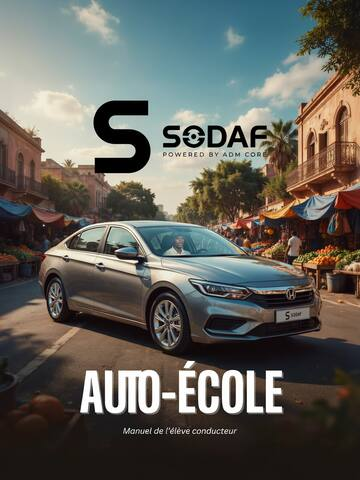
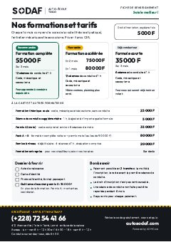
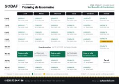

<!doctype html>
<html lang="fr">
<head>
<meta charset="utf-8">
<meta name="viewport" content="width=device-width, initial-scale=1, viewport-fit=cover">
<title>SODAF Auto-École · Togo</title>
<meta name="description" content="SODAF, auto-école au Togo : code de la route, conduite, secourisme et mécanique. Cours en ligne, quiz corrigés et pré-inscription en une minute.">
<meta property="og:title" content="SODAF Auto-École · Togo">
<meta property="og:description" content="La route s'apprend ici. Cours du manuel SODAF en ligne, quiz, outils et pré-inscription.">
<meta property="og:type" content="website">
<meta property="og:url" content="https://autosodaf.com/">
<meta property="og:site_name" content="SODAF Auto-École">
<meta property="og:image" content="https://autosodaf.com/og-image.jpg">
<meta property="og:image:width" content="1200">
<meta property="og:image:height" content="630">
<meta property="og:image:alt" content="Voiture école SODAF dans une rue de Lomé">
<meta name="twitter:card" content="summary_large_image">
<meta name="theme-color" content="#14171C">
<link rel="preconnect" href="https://fonts.googleapis.com">
<link rel="stylesheet" href="https://fonts.googleapis.com/css2?family=Outfit:wght@500;600;700;800&family=Figtree:wght@400;500;600;700&display=swap">
</head>
<body>
<div id="sodaf-root"><div id="app"></div></div>
<script>

const AIRTABLE_HOOK = "https://hooks.airtable.com/workflows/v1/genericWebhook/appNfMHMfzc5612Hc/wflZYJf8MhXOIEIGs/wtrW8QD2hFYrxK9u5";
async function sendToAirtable(payload) {
  // Envoi au format formulaire web (requête simple, sans vérification préalable du navigateur).
  const body = new URLSearchParams(payload);
  if (navigator.onLine === false) return false;
  try {
    const r = await fetch(AIRTABLE_HOOK, { method: "POST", body });
    return r.ok;
  } catch (e) {
    // La requête est partie mais le navigateur ne laisse pas lire la réponse d'Airtable :
    // on la considère reçue si l'appareil est en ligne.
    return navigator.onLine !== false;
  }
}

const WA = "https://wa.me/22872544166";
// Espace équipe : empreinte SHA-256 du code d'accès (en majuscules). Simple verrou d'affichage : les données restent protégées par la connexion Airtable.
const TEAM_HASH = "f3ef1ca6b2fee25d6934c15f3b2d68e0bdac4c07b70f77f714ffc64411868236";
const TEAM_LINKS = { conduite: "https://airtable.com/appNfMHMfzc5612Hc/pagnl2QLcW11krdLq", code: "https://airtable.com/appNfMHMfzc5612Hc/pagQCm5voueu6Nr1E", inscriptions: "https://airtable.com/appNfMHMfzc5612Hc/pagLZ21abl0bkeirW" };
const P_MONO = "M15.42 43.8 l0 10.32 c0 3.66 -1.5 6.24 -6.12 6.24 l-0.84 0 c-4.5 0 -6.06 -2.58 -6.06 -6.24 l0 -14.64 l2.28 0 l0 13.68 c0 2.64 0.6 4.92 4.26 4.92 c3.6 0 4.2 -2.28 4.2 -4.92 l0 -9.96 c0 -3.9 -2.64 -7.2 -4.92 -10.5 c-3.84 -5.58 -5.82 -7.74 -5.82 -13.56 l0 -9.36 c0 -3.66 1.5 -6.24 6.06 -6.24 l0.84 0 c4.56 0 6.12 2.58 6.12 6.24 l0 14.76 l-2.28 0 l0 -13.8 c0 -2.64 -0.66 -4.92 -4.26 -4.92 s-4.2 2.28 -4.2 4.92 l0 9 c-0.06 3.78 1.62 6.3 4.62 10.62 c4.08 5.88 6.12 8.04 6.12 13.44 z";
const P_SLOGAN = "M7.695313 5.888672 c2.763672 0 4.482422 2.050781 4.482422 4.560547 c0 2.568359 -1.71875 4.492188 -4.482422 4.492188 l-2.939453 0 l0 5.058594 l-2.929687 0 l0 -14.111328 l5.869141 0 z M7.207031 12.490234 c1.464844 0 2.148438 -0.810547 2.148438 -2.080078 c0 -1.220703 -0.683594 -2.070312 -2.148437 -2.070312 l-2.451172 0 l0 4.150391 l2.451172 0 z M20.888672 20.195313 c-4.150391 0 -7.216797 -2.832031 -7.216797 -7.255859 c0 -4.433594 3.066406 -7.246094 7.216797 -7.246094 c4.140625 0 7.207031 2.8125 7.207031 7.246094 c0 4.423828 -3.066406 7.255859 -7.207031 7.255859 z M20.888672 17.509766 c2.431641 0 4.296875 -1.708984 4.296875 -4.570312 c0 -2.851562 -1.865234 -4.550781 -4.296875 -4.550781 s-4.296875 1.699219 -4.296875 4.550781 c0 2.861328 1.865234 4.570313 4.296875 4.570313 z M33.085938 20 l-3.691406 -14.111328 l3.046875 0 l2.753906 10.683594 l3.154297 -10.683594 l2.470703 0 l3.134766 10.683594 l2.783203 -10.683594 l3.037109 0 l-3.691406 14.111328 l-3.769531 0 l-2.734375 -8.720703 l-2.724609 8.720703 l-3.769531 0 z M60.214844 8.466797 l-5.234375 0 l0 3.203125 l4.638672 0 l0 2.548828 l-4.638672 0 l0 3.193359 l5.234375 0 l0 2.587891 l-8.183594 0 l0 -14.111328 l8.183594 0 l0 2.578125 z M70.683594 20 l-3.671875 -6.210937 l-0.849609 0 l0 6.210938 l-2.929687 0 l0 -14.111328 l5.117188 0 c3.193359 0 4.541016 1.884766 4.541016 4.21875 c0 1.894531 -1.074219 3.125 -2.988281 3.535156 l4.248047 6.357422 l-3.466797 0 z M66.162109 8.320313 l0 3.369141 l1.728516 0 c1.5625 0 2.197266 -0.664062 2.197266 -1.679687 c0 -1.005859 -0.634766 -1.689453 -2.197266 -1.689453 l-1.728516 0 z M84.482422 8.466797 l-5.234375 0 l0 3.203125 l4.638672 0 l0 2.548828 l-4.638672 0 l0 3.193359 l5.234375 0 l0 2.587891 l-8.183594 0 l0 -14.111328 l8.183594 0 l0 2.578125 z M87.5 20 l0 -14.111328 l5.107422 0 c4.501953 0 6.728516 2.832031 6.728516 7.050781 c0 4.228516 -2.226562 7.060547 -6.728516 7.060547 l-5.107422 0 z M90.429687 17.412109 l2.03125 0 c2.597656 0 3.789063 -1.621094 3.789063 -4.472656 s-1.191406 -4.472656 -3.789062 -4.472656 l-2.03125 0 l0 8.945313 z M114.853516 12.548828 c1.591797 0.439453 2.65625 1.484375 2.65625 3.496094 c0 2.382813 -1.445312 3.955078 -4.423828 3.955078 l-5.810547 0 l0 -14.111328 l4.570313 0 c3.046875 0 4.648438 1.464844 4.648438 3.867188 c0 1.240234 -0.537109 2.255859 -1.640625 2.792969 z M111.875 8.320313 l-1.777344 0 l0 3.320313 l1.904297 0 c1.25 0 1.796875 -0.742187 1.796875 -1.699219 c0 -0.9375 -0.615234 -1.621094 -1.923828 -1.621094 z M112.539063 17.490234 c1.582031 0 2.128906 -0.849609 2.128906 -1.767578 c0 -0.9375 -0.537109 -1.826172 -2.1875 -1.826172 l-2.382812 0 l0 3.59375 l2.441406 0 z M130.703125 5.888672 l-4.638672 7.353516 l0 6.757813 l-2.939453 0 l0 -6.689453 l-4.667969 -7.421875 l3.242188 0 l2.880859 4.804688 l2.890625 -4.804687 l3.232422 0 z M147.324219 20 l-1.025391 -2.910156 l-5.927734 0 l-1.025391 2.910156 l-2.998047 0 l5.195313 -14.111328 l3.583984 0 l5.195313 14.111328 l-2.998047 0 z M141.230469 14.638672 l4.208984 0 l-2.099609 -5.986328 z M152.441406 20 l0 -14.111328 l5.107422 0 c4.501953 0 6.728516 2.832031 6.728516 7.050781 c0 4.228516 -2.226562 7.060547 -6.728516 7.060547 l-5.107422 0 z M155.371093 17.412109 l2.03125 0 c2.597656 0 3.789063 -1.621094 3.789063 -4.472656 s-1.191406 -4.472656 -3.789062 -4.472656 l-2.03125 0 l0 8.945313 z M183.19336 20 l-2.919922 0 l-0.927734 -10.634766 l-3.574219 10.634766 l-1.894531 0 l-3.574219 -10.634766 l-0.9375 10.634766 l-2.929687 0 l1.181641 -14.111328 l4.179688 0 l3.007813 8.857422 l3.046875 -8.857422 l4.179688 0 z M197.705078 20.195313 c-4.150391 0 -7.216797 -2.822266 -7.216797 -7.255859 s3.066406 -7.246094 7.216797 -7.246094 c3.144531 0 5.664063 1.611328 6.669922 4.287109 l-2.734375 0.996094 c-0.625 -1.640625 -2.119141 -2.587891 -3.935547 -2.587891 c-2.431641 0 -4.296875 1.699219 -4.296875 4.550781 s1.865234 4.560547 4.296875 4.560547 c1.816406 0 3.310547 -0.957031 3.935547 -2.597656 l2.734375 0.996094 c-1.005859 2.675781 -3.525391 4.296875 -6.669922 4.296875 z M213.027344 20.195313 c-4.150391 0 -7.216797 -2.832031 -7.216797 -7.255859 c0 -4.433594 3.066406 -7.246094 7.216797 -7.246094 c4.140625 0 7.207031 2.8125 7.207031 7.246094 c0 4.423828 -3.066406 7.255859 -7.207031 7.255859 z M213.027344 17.509766 c2.431641 0 4.296875 -1.708984 4.296875 -4.570312 c0 -2.851562 -1.865234 -4.550781 -4.296875 -4.550781 s-4.296875 1.699219 -4.296875 4.550781 c0 2.861328 1.865234 4.570313 4.296875 4.570313 z M230.38086 20 l-3.671875 -6.210937 l-0.849609 0 l0 6.210938 l-2.929687 0 l0 -14.111328 l5.117188 0 c3.193359 0 4.541016 1.884766 4.541016 4.21875 c0 1.894531 -1.074219 3.125 -2.988281 3.535156 l4.248047 6.357422 l-3.466797 0 z M225.859375 8.320313 l0 3.369141 l1.728516 0 c1.5625 0 2.197266 -0.664062 2.197266 -1.679687 c0 -1.005859 -0.634766 -1.689453 -2.197266 -1.689453 l-1.728516 0 z M244.179688 8.466797 l-5.234375 0 l0 3.203125 l4.638672 0 l0 2.548828 l-4.638672 0 l0 3.193359 l5.234375 0 l0 2.587891 l-8.183594 0 l0 -14.111328 l8.183594 0 l0 2.578125 z";
const P_S = "M13.027344 40.390625 c-6.054687 0 -10.78125 -2.910156 -11.640625 -8.203125 l6.054688 -1.386719 c0.390625 3.164063 2.714844 4.804688 5.820313 4.804688 c2.382813 0 4.277344 -1.054687 4.257813 -3.4375 c-0.019531 -2.65625 -3.144531 -3.496094 -6.582031 -4.550781 c-4.140625 -1.289062 -8.574219 -2.8125 -8.574219 -8.007812 c0 -5.253906 4.296875 -8.222656 9.960938 -8.222656 c4.960938 0 9.960938 2.011719 11.09375 7.421875 l-5.664062 1.40625 c-0.527344 -2.8125 -2.421875 -4.042969 -5.078125 -4.042969 c-2.363281 0 -4.375 0.976563 -4.375 3.300781 c0 2.167969 2.773438 2.890625 5.976563 3.847656 c4.257813 1.289063 9.296875 2.929688 9.296875 8.554688 c0 5.996094 -5.019531 8.515625 -10.546875 8.515625 z";
const P_SYM = "M169.72 64.47c22.62.01 45.36 7.69 63.49 20.59q7.26 5.17 16.49 14.56c14.14 14.38 23.59 33.87 27.25 53.02a1.08 1.07-23.8 0 1-.41 1.05l-24.37 18.13a1.03 1.03 0 0 1-1.03.12l-18.46-8.18a2.18 2.17-80.5 0 1-1.28-1.8q-1.04-12.01-7.870-22.28-6.99-10.51-13.36-15.020-10.57-7.49-21.78-10.47a.96.95 15.1 0 1-.68-1.17l3.48-12.82a2.63 2.62-54.3 0 0-.35-2.14l-21.73-32.45a.73.73 0 0 1 .61-1.14M67.99 169.3a.4.4 0 0 1-.53-.45c4.82-24.68 16.16-47.31 34.82-64.57q20.1-18.58 47.07-24.67a1.28 1.28 0 0 1 1.27.44l16.67 20.24a2.34 2.32 33.1 0 1 .45 2.08l-5.42 19.98a.96.95-88.9 0 1-.7.68q-32.53 7.65-43.31 38.82a.09.09 0 0 1-.12.05l-13.48-6.41a1.7 1.7 0 0 0-1.38-.05zM181.05 284.03q-11.81.19-19.36-1.46-25.55-5.56-44.12-18.88-8.23-5.9-17.98-16.21c-13.35-14.12-21.92-31.46-26.04-50.06a1.26 1.25-25.8 0 1 .44-1.25q10.73-8.5 18.68-14.49 3.13-2.35 6.04-3.83a1.48 1.45 42.9 0 1 1.27-.03l18.31 8.1a.86.85-82.3 0 1 .49.65q.58 3.88 1.62 8.07c2.15 8.66 6.85 15.82 12.74 22.39 7.54 8.4 17.42 12.93 28.24 16.49a.89.89 0 0 1 .59 1.03l-3.18 14.41a1.71 1.69 34.7 0 0 .25 1.32l22.27 33.27a.31.31 0 0 1-.26.48M281.9 179.96a.31.3-6.5 0 1 .42.33c-7.78 42.68-38.46 77.58-80.58 88.76a1.88 1.87-28 0 1-1.91-.58c-8.29-9.52-12.99-14.64-17.86-21.74a1.45 1.42-55.1 0 1-.2-1.18l5.18-19.12a2.51 2.49-88.6 0 1 1.85-1.77q31.14-7.07 42.46-37.11a.61.6 25.3 0 1 .87-.31l12.770 7.37a1.88 1.87 48.7 0 0 1.65.11z";
const P_DAF = "M3.652344 40 l0 -28.222656 l10.214844 0 c9.003906 0 13.457031 5.664063 13.457031 14.101563 c0 8.457031 -4.453125 14.121094 -13.457031 14.121094 l-10.214844 0 z M9.511719 34.824219 l4.0625 0 c5.195313 0 7.578125 -3.242187 7.578125 -8.945312 s-2.382812 -8.945312 -7.578125 -8.945312 l-4.0625 0 l0 17.890625 z M48.813477 40 l-2.050781 -5.820312 l-11.855469 0 l-2.050781 5.820313 l-5.996094 0 l10.390625 -28.222656 l7.167969 0 l10.390625 28.222656 l-5.996094 0 z M36.625977 29.277344 l8.417969 0 l-4.199219 -11.972656 z M72.802735 16.933594 l-10.742187 0 l0 6.40625 l9.277344 0 l0 5.097656 l-9.277344 0 l0 11.5625 l-5.898437 0 l0 -28.222656 l16.640625 0 l0 5.15625 z";
const G_MONO = `<g transform="matrix(6.9124421532822655,0,0,6.9124421532822655,-16.58986182709929,-24.47007132780466)"><path d="${P_MONO}"/></g>`;
const G_WORD = `<g transform="matrix(1.2412121212121212,0,0,1.2412121212121212,108.27878787878788,154.86666666666667)"><path d="${P_S}"/></g><g transform="matrix(0.163949618536616,0,0,0.163949618536616,131.9410958938379,158.43017289615585)"><path d="${P_SYM}"/></g><g transform="matrix(1.2755709342560553,0,0,1.2755709342560553,178.34117647058824,153.9771626297578)"><path d="${P_DAF}"/></g>`;
const G_SLOGAN = `<g transform="matrix(0.5941733489140508,0,0,0.5941733489140508,108.91493705801467,211.61715787690898)"><path d="${P_SLOGAN}"/></g>`;
const LOGO = (c, v) => {
  const vb = v === "word" ? "108 167 165 40" : v === "ws" ? "108 167 165 58" : v === "mono" ? "-2 -4 96 400" : "-4 -6 279 404";
  const inner = v === "word" ? G_WORD : v === "ws" ? G_WORD + G_SLOGAN : v === "mono" ? G_MONO : G_MONO + G_WORD + G_SLOGAN;
  return `<svg class="lg lg-${v}" viewBox="${vb}" fill="${c}" role="img" aria-label="SODAF" xmlns="http://www.w3.org/2000/svg">${inner}</svg>`;
};
const FAVICON = "data:image/svg+xml," + encodeURIComponent(`<svg xmlns="http://www.w3.org/2000/svg" viewBox="0 0 64 64"><rect width="64" height="64" rx="14" fill="#14171C"/><g fill="#fff" transform="translate(24.4 5.3) scale(0.86)"><path d="${P_MONO}"/></g></svg>`);
const PX = (id) => `https://images.pexels.com/photos/${id}/pexels-photo-${id}.jpeg?auto=compress&cs=tinysrgb&w=1800`;
const SLIDES = [
  { img: PX(4606336), rule: "Ceinture obligatoire, à l'avant comme à l'arrière.", tag: "Conduite" },
  { img: PX(13749873), rule: "Passage piéton : arrêt et stationnement interdits dessus.", tag: "Marquages" },
  { img: PX(4606341), rule: "Mains à 9h15 sur le volant : le meilleur contrôle.", tag: "Poste de conduite" },
  { img: PX(8811580), rule: "Ligne continue : dépassement interdit.", tag: "Code de la route" },
];

const CSS = String.raw`
#sodaf-root{--bg:#FFFFFF;--soft:#F6F7F8;--ink:#14171C;--muted:#5D6570;--line:#E6E8EB;--green:#0B6E4F;--green-soft:#E8F3EE;--yellow:#F2B100;--red:#C8372D;--red-soft:#FBEAE8;--blue:#2B63B5;
--f-display:"Outfit","Figtree",system-ui,-apple-system,"Segoe UI",sans-serif;--f-body:"Figtree",system-ui,-apple-system,"Segoe UI",sans-serif;--f-mono:"Outfit","Figtree",system-ui,sans-serif;
background:var(--bg);color:var(--ink);font-family:var(--f-body);font-size:17px;line-height:1.65;-webkit-font-smoothing:antialiased}
#home-header3,[id="b6478570-c21e-4a22-ba14-4a078936f572"],[data-block-id="b6478570-c21e-4a22-ba14-4a078936f572"],[data-id="b6478570-c21e-4a22-ba14-4a078936f572"],[data-hrid="home-header3"],[data-block-hrid="home-header3"]{display:none!important}
#sodaf-root *{box-sizing:border-box}
@media (prefers-reduced-motion:reduce){#sodaf-root *{animation:none!important;transition:none!important}}
#sodaf-root a{color:var(--green)}
#sodaf-root :focus-visible{outline:3px solid var(--yellow);outline-offset:2px;border-radius:4px}
#sodaf-root h1,#sodaf-root h2,#sodaf-root h3{font-family:var(--f-display);line-height:1.08;letter-spacing:-.025em;text-wrap:balance;margin:0;color:var(--ink)}
#sodaf-root h2{font-size:clamp(1.75rem,3.6vw,2.4rem);font-weight:700}
#sodaf-root h3{font-size:1.22rem;font-weight:700;letter-spacing:-.015em}
#sodaf-root h4{font:700 1.08rem var(--f-body);margin:24px 0 6px}
#sodaf-root p{margin:0}
#sodaf-root ul{list-style:disc}#sodaf-root ol{list-style:decimal}
#sodaf-root [hidden]{display:none!important}
#sodaf-root img{max-width:100%;display:block}
#sodaf-root svg{display:inline-block}
.wrap{max-width:1160px;margin-inline:auto;padding-inline:clamp(16px,4vw,32px)}
.eyebrow{font-family:var(--f-display);font-size:.78rem;letter-spacing:.08em;text-transform:uppercase;color:var(--muted);font-weight:600;display:flex;align-items:center;gap:10px}

.btn{display:inline-flex;align-items:center;gap:.5em;font:600 1rem var(--f-body);padding:.8em 1.35em;border-radius:999px;border:1.5px solid transparent;cursor:pointer;text-decoration:none;transition:transform .15s,box-shadow .15s}
.btn:hover{transform:translateY(-1px)}
#sodaf-root .btn-green{background:var(--green);color:#fff}
#sodaf-root .btn-green:hover{box-shadow:0 10px 24px -12px rgba(11,110,79,.7)}
#sodaf-root .btn-line{background:#fff;border-color:var(--line);color:var(--ink)}
#sodaf-root .btn-line:hover{border-color:var(--ink)}
.btn-sm{padding:.45em .95em;font-size:.9rem}
.tag{display:inline-block;align-self:flex-start;font-family:var(--f-mono);font-size:.7rem;font-weight:600;letter-spacing:.08em;text-transform:uppercase;padding:.28em .6em;border-radius:4px;background:var(--soft);color:var(--muted)}
.tag.y{background:var(--yellow);color:var(--ink)}

/* header */
header.top{position:sticky;top:0;z-index:50;background:rgba(255,255,255,.92);backdrop-filter:saturate(1.4) blur(10px);border-bottom:1px solid var(--line)}
.bar{display:flex;align-items:center;gap:20px;min-height:66px;position:relative}
#sodaf-root .logo{display:flex;align-items:center;gap:10px;text-decoration:none;color:var(--ink)}
.logo-mark{width:34px;height:34px;border-radius:9px;background:var(--ink);display:grid;place-items:center;color:#fff;font:800 1.3rem/1 var(--f-display)}
.logo-word{font:800 1.6rem/1 var(--f-display);letter-spacing:.05em}
.logo small{display:block;font:500 .56rem var(--f-mono);letter-spacing:.16em;color:var(--muted);margin-top:2px}
nav.main{display:flex;gap:2px;margin-left:auto}
#sodaf-root nav.main a{color:var(--muted);text-decoration:none;font-weight:600;font-size:.95rem;padding:.45em .75em;border-radius:8px;white-space:nowrap}
#sodaf-root nav.main a:hover{color:var(--ink);background:var(--soft)}
#sodaf-root nav.main a.on{color:var(--ink);box-shadow:inset 0 -3px 0 var(--yellow);border-radius:0}
.burger{display:none;margin-left:auto;background:#fff;border:1.5px solid var(--line);color:var(--ink);border-radius:8px;padding:.35em .8em;font:600 .95rem var(--f-body);cursor:pointer}
.hdr-link{font-weight:600;font-size:.95rem;color:var(--ink)!important;text-decoration:none;white-space:nowrap;padding:.45em .2em;border-bottom:2px solid var(--yellow)}
.pricebar{position:relative;z-index:3;margin-top:-34px;background:#fff;border:1px solid var(--line);border-radius:16px;box-shadow:0 18px 40px -26px rgba(0,0,0,.35);padding:18px 22px;display:grid;grid-template-columns:repeat(3,minmax(0,1fr)) auto;gap:16px 28px;align-items:center}
.pb-item{display:flex;flex-direction:column;gap:2px;min-width:0;padding-left:16px;border-left:3px solid var(--line)}
.pb-item:first-child{border-left-color:var(--green)}
.pb-item span{font-size:.86rem;color:var(--muted)}
.pb-item b{font:800 1.45rem/1.1 var(--f-display);letter-spacing:-.02em}
@media (min-width:821px){.dots{bottom:50px!important}.rule{bottom:70px!important}.hero-in{padding-bottom:120px!important}}
@media (max-width:900px){.pricebar{grid-template-columns:repeat(2,minmax(0,1fr))}.pricebar .btn{grid-column:1/-1;justify-content:center}}
@media (max-width:520px){.pricebar{grid-template-columns:1fr;margin-top:-20px}}
@media (max-width:1240px){.burger{display:inline-block}.bar>.btn-green,.bar>.hdr-link{display:none!important}nav.main{display:none;position:absolute;left:-16px;right:-16px;top:100%;background:#fff;flex-direction:column;padding:8px 16px 18px;border-bottom:1px solid var(--line);box-shadow:0 20px 30px -20px rgba(0,0,0,.2)}nav.main.open{display:flex}#sodaf-root nav.main a{padding:.8em .6em;font-size:1.08rem}#sodaf-root nav.main a.on{box-shadow:inset 3px 0 0 var(--yellow)}}

/* subtle white-background patterns */
.pat-dots{background-image:radial-gradient(rgba(20,23,28,.07) 1px,transparent 1.2px);background-size:22px 22px}
.pat-lane{height:6px;background:repeating-linear-gradient(90deg,var(--yellow) 0 34px,transparent 34px 58px) #15191E}
.zebra{position:absolute;width:180px;height:120px;background:repeating-linear-gradient(90deg,rgba(20,23,28,.045) 0 16px,transparent 16px 32px);pointer-events:none}

/* hero */
.hero{position:relative;min-height:min(86vh,740px);display:flex;align-items:center;overflow:hidden;background:#fff}
.slides{position:absolute;inset:0}
#sodaf-root .slides img{position:absolute;inset:0;width:100%;height:100%;object-fit:cover;opacity:0;transition:opacity 1.6s ease;transform:scale(1.06)}
#sodaf-root .slides img.on{opacity:1;animation:sdkb 9s ease-out forwards}
@keyframes sdkb{from{transform:scale(1.06) translate(0,0)}to{transform:scale(1.16) translate(-2%,-1.5%)}}
.veil{position:absolute;inset:0;background:linear-gradient(90deg,#fff 0%,rgba(255,255,255,.96) 32%,rgba(255,255,255,.6) 56%,rgba(255,255,255,.05) 82%)}
.hero::after{content:"";position:absolute;left:0;right:0;bottom:0;height:120px;background:linear-gradient(to bottom,rgba(255,255,255,0),#fff)}
.hero-in{position:relative;z-index:2;padding-block:64px 96px;width:100%}
.hero-copy{max-width:560px}
.greet{font-family:var(--f-display);font-size:.95rem;letter-spacing:0;color:var(--green);font-weight:600;margin-bottom:16px!important}
#sodaf-root .hero h1{font-size:clamp(2.7rem,6.4vw,4.9rem);font-weight:800;line-height:1.02;letter-spacing:-.035em}
.hero h1 em{font-style:normal;color:var(--green)}
.hero p.lead{margin-top:20px;max-width:46ch;font-size:1.12rem;color:var(--muted)}
.ctas{display:flex;flex-wrap:wrap;gap:12px;margin-top:28px}
.facts{display:flex;flex-wrap:wrap;gap:20px 34px;margin-top:34px}
.facts b{display:block;font:800 2rem/1 var(--f-display)}
.facts span{font-size:.86rem;color:var(--muted)}
.rule{position:absolute;z-index:3;right:clamp(16px,4vw,40px);bottom:56px;display:flex;gap:12px;align-items:center;background:#fff;border:1px solid var(--line);border-radius:14px;padding:12px 16px;max-width:340px;box-shadow:0 18px 40px -24px rgba(0,0,0,.35);transition:opacity .5s}
.rule .dot{width:36px;height:36px;border-radius:50%;background:var(--yellow);display:grid;place-items:center;flex-shrink:0;font:800 1rem var(--f-display)}
.rule small{display:block;font:600 .66rem var(--f-mono);letter-spacing:.1em;text-transform:uppercase;color:var(--muted)}
.rule p{font-size:.94rem;font-weight:600;line-height:1.35}
.dots{position:absolute;z-index:3;left:clamp(16px,4vw,32px);bottom:30px;display:flex;gap:8px}
.dots button{width:28px;height:4px;border-radius:2px;border:0;background:var(--line);cursor:pointer;padding:0}
.dots button.on{background:var(--ink)}
.lane{position:absolute;z-index:2;left:0;right:0;bottom:0;height:5px;background:repeating-linear-gradient(90deg,var(--ink) 0 46px,transparent 46px 80px);opacity:.12;animation:sdlane 1.4s linear infinite}
@keyframes sdlane{to{background-position:80px 0}}
@media (max-width:820px){.hero{align-items:flex-end;min-height:auto}.veil{background:linear-gradient(180deg,rgba(255,255,255,.15) 0%,rgba(255,255,255,.85) 42%,#fff 62%)}.hero-in{padding-block:240px 110px}.rule{left:16px;right:16px;bottom:52px;max-width:none}}

/* sections */
section.page{padding-bottom:88px}
.sec{padding-top:72px;position:relative}
.sec-head{display:flex;flex-wrap:wrap;align-items:end;justify-content:space-between;gap:12px 24px;margin-bottom:28px}
.sec-head p{max-width:52ch;color:var(--muted)}
.grid{display:grid;gap:18px}
.g2{grid-template-columns:repeat(2,minmax(0,1fr))}.g3{grid-template-columns:repeat(3,minmax(0,1fr))}.g4{grid-template-columns:repeat(4,minmax(0,1fr))}
@media (max-width:900px){.g3,.g4{grid-template-columns:repeat(2,minmax(0,1fr))}}
@media (max-width:600px){.g2,.g3,.g4{grid-template-columns:1fr}}
.card{background:#fff;border:1px solid var(--line);border-radius:14px;padding:22px;min-width:0}
.card h3{margin-bottom:8px}
.card p{color:var(--muted)}
.card.soft{background:var(--soft);border-color:transparent}

/* 4 signalisations */
.signals{display:grid;grid-template-columns:repeat(4,minmax(0,1fr));border:1px solid var(--line);border-radius:14px;overflow:hidden;background:#fff}
#sodaf-root .signals a{display:flex;gap:14px;align-items:center;padding:20px;text-decoration:none;color:var(--ink);border-right:1px solid var(--line);transition:background .15s}
#sodaf-root .signals a:last-child{border-right:0}
#sodaf-root .signals a:hover{background:var(--soft)}
.signals svg{width:44px;height:44px;flex-shrink:0}
.signals b{display:block;font-weight:700}
.signals span{font-size:.88rem;color:var(--muted)}
@media (max-width:900px){.signals{grid-template-columns:repeat(2,minmax(0,1fr))}#sodaf-root .signals a:nth-child(2){border-right:0}#sodaf-root .signals a:nth-child(-n+2){border-bottom:1px solid var(--line)}}
@media (max-width:520px){.signals{grid-template-columns:1fr}#sodaf-root .signals a{border-right:0;border-bottom:1px solid var(--line)}#sodaf-root .signals a:last-child{border-bottom:0}}

.feat{display:flex;flex-direction:column;gap:10px}
.fico{width:42px;height:42px;border-radius:11px;background:var(--green-soft);color:var(--green);display:grid;place-items:center}#sodaf-root .fico svg{display:block;width:22px;height:22px}
#sodaf-root .feat a.more{margin-top:auto;font-weight:600;text-decoration:none}

/* parcours on a road line */
.route{position:relative;display:grid;grid-template-columns:repeat(5,minmax(0,1fr));gap:16px}
.route::before{content:"";position:absolute;left:0;right:0;top:19px;height:3px;background:repeating-linear-gradient(90deg,var(--ink) 0 18px,transparent 18px 32px);opacity:.18}
.stop{position:relative;min-width:0}
.stop i{display:grid;place-items:center;width:40px;height:40px;border-radius:50%;background:#fff;border:2px solid var(--ink);font:800 1.1rem var(--f-display);font-style:normal;margin-bottom:12px}
.stop:last-child i{background:var(--green);border-color:var(--green);color:#fff}
.stop b{display:block}.stop span{font-size:.92rem;color:var(--muted)}
@media (max-width:820px){.route{grid-template-columns:1fr;gap:18px}.route::before{left:19px;right:auto;top:0;bottom:0;width:3px;height:auto;background:repeating-linear-gradient(180deg,var(--ink) 0 14px,transparent 14px 26px)}.stop{display:grid;grid-template-columns:40px 1fr;gap:14px}.stop i{margin:0}}

/* question du jour */
.qday{display:grid;grid-template-columns:minmax(0,.9fr) minmax(0,1.1fr);gap:32px;align-items:start;position:relative;overflow:hidden}
.qday .zebra{right:-20px;top:-20px}
@media (max-width:820px){.qday{grid-template-columns:1fr}}

.band{border:1px solid var(--line);border-radius:18px;padding:36px;display:grid;grid-template-columns:1fr auto;gap:20px;align-items:center;position:relative;overflow:hidden;background:#fff}
.band .zebra{left:-30px;bottom:-40px;transform:rotate(-8deg)}
.band p{color:var(--muted);margin-top:8px;max-width:56ch}
@media (max-width:700px){.band{grid-template-columns:1fr;padding:26px}}

/* page heads (inner pages) */
.page-head{position:relative;padding-block:56px 36px;border-bottom:1px solid var(--line);overflow:hidden}
.page-head .zebra{right:6%;top:24px}
#sodaf-root .page-head h1{font-size:clamp(2.2rem,5.4vw,3.4rem);font-weight:800;letter-spacing:-.03em;margin-top:10px}
.page-head p.lead{max-width:60ch;margin-top:12px;color:var(--muted);font-size:1.08rem}

/* formations */
.offer{display:flex;flex-direction:column;gap:12px}
.offer .cat{font:800 2.2rem/1 var(--f-display);letter-spacing:-.03em}
.offer h3{margin:0}
.alacarte{display:grid;gap:4px}
.acrow{display:flex;justify-content:space-between;align-items:center;gap:16px;padding:12px 0;border-top:1px solid var(--line)}
.acrow:first-of-type{margin-top:8px}
.acrow span{color:var(--muted)}
.wk{display:flex;justify-content:space-between;align-items:baseline;gap:14px;padding:11px 0;border-top:1px solid var(--line)}
.wk:first-of-type{margin-top:10px}
.wk b{font-family:var(--f-display);font-weight:700;white-space:nowrap}
.wk span{color:var(--muted);text-align:right}
.steps-ol{margin:12px 0 0;padding-left:1.2em;color:var(--muted);display:grid;gap:8px}
.steps-ol b{color:var(--ink)}
.classband{display:flex;flex-wrap:wrap;align-items:center;gap:10px 22px;margin-top:28px;padding:16px 20px;border-radius:12px;background:var(--soft);border-left:4px solid var(--yellow)}
.classband p{margin:0}
#sodaf-root footer.site a.teamlink{display:inline;color:rgba(255,255,255,.45);padding:0}
.lockcard{max-width:460px;margin:0 auto;text-align:center}
.lockico{width:56px;height:56px;border-radius:50%;background:var(--soft);display:grid;place-items:center;margin:0 auto 14px;color:var(--ink)}
.lockcard form{display:flex;gap:10px;margin-top:18px}
.lockcard input{flex:1;min-width:0;text-transform:uppercase;letter-spacing:.12em;text-align:center}
.teamgrid{display:grid;grid-template-columns:repeat(3,minmax(0,1fr));gap:16px}
@media (max-width:860px){.teamgrid{grid-template-columns:1fr}}
a.teamtile{display:flex;flex-direction:column;gap:6px;text-decoration:none;color:var(--ink);transition:transform .15s,box-shadow .15s}
a.teamtile:hover{transform:translateY(-2px);box-shadow:0 14px 30px -18px rgba(0,0,0,.35)}
a.teamtile b{font:700 1.3rem var(--f-display)}
a.teamtile span{color:var(--muted)}
a.teamtile em{font-style:normal;font-weight:700;color:var(--green);margin-top:8px}
.teamsteps{margin:10px 0 0;padding-left:1.2em;display:grid;gap:8px;color:var(--muted)}
.teamsteps b{color:var(--ink)}
.sr-only{position:absolute;width:1px;height:1px;overflow:hidden;clip:rect(0 0 0 0);white-space:nowrap}
@media (max-width:760px){#sd-teamPanel .g2{grid-template-columns:1fr}}

.classband .cb-t{font-family:var(--f-display);font-weight:700}
.classband .cb-d{color:var(--muted);font-size:.95rem}
.acrow strong{font:800 1.2rem var(--f-display);white-space:nowrap}
@media (max-width:600px){.acrow{flex-direction:column;align-items:flex-start;gap:4px}
.wk{flex-direction:column;gap:2px}.wk span{text-align:left}
.classband .btn{margin-left:0!important}}
#sodaf-root .offer ul{margin:0;padding-left:1.1em;color:var(--muted)}
.price{margin-top:auto;padding-top:14px;border-top:1px dashed var(--line);display:flex;justify-content:space-between;align-items:center;gap:10px;flex-wrap:wrap}
.price b{font-family:var(--f-mono);font-size:.84rem;color:var(--muted)}
.offer.star{border:2px solid var(--ink)}
.pills{display:flex;flex-wrap:wrap;gap:8px;margin-top:14px}
.pills span{font-weight:600;font-size:.9rem;padding:.45em .85em;border-radius:999px;border:1px solid var(--line)}

/* cours */
.course{display:grid;grid-template-columns:250px minmax(0,1fr);gap:36px;align-items:start;padding-top:36px}
.toc{position:sticky;top:86px;border:1px solid var(--line);border-radius:14px;padding:12px;max-height:calc(100vh - 110px);overflow:auto;background:#fff}
.toc .part{font:600 .68rem var(--f-mono);letter-spacing:.12em;text-transform:uppercase;color:var(--muted);margin:12px 8px 4px}
.toc button{display:flex;justify-content:space-between;align-items:center;gap:8px;width:100%;text-align:left;background:none;border:0;padding:.42em .55em;border-radius:6px;font:500 .93rem var(--f-body);color:var(--ink);cursor:pointer}
.toc button:hover{background:var(--soft)}
.toc .done{width:14px;height:14px;border-radius:50%;border:2px solid var(--line);flex-shrink:0}
.toc button.read .done{background:var(--green);border-color:var(--green)}
.toc button.cur{background:var(--green-soft);font-weight:600}
.toc button.cur .done{border-color:var(--green);box-shadow:inset 0 0 0 3px #fff,inset 0 0 0 8px var(--yellow)}
.toc button.cur.read .done{box-shadow:inset 0 0 0 3px var(--green),inset 0 0 0 8px var(--yellow)}
.toc .done{transition:box-shadow .2s,background .2s,border-color .2s}
@media (max-width:900px){.course{grid-template-columns:1fr;gap:20px}.toc{position:static;max-height:none;display:flex;gap:6px;overflow-x:auto;padding:10px}.toc .part{display:none}.toc button{white-space:nowrap;width:auto;background:var(--soft)}}
article.ch{border:1px solid var(--line);border-radius:14px;padding:clamp(20px,3vw,34px);margin-bottom:22px;scroll-margin-top:90px;background:#fff}
article.ch header{display:flex;justify-content:space-between;align-items:start;gap:16px;flex-wrap:wrap;padding-bottom:16px;margin-bottom:18px;border-bottom:1px solid var(--line)}
#sodaf-root article.ch h2{font-size:clamp(1.8rem,4vw,2.4rem)}
article.ch p,article.ch li{max-width:70ch}
article.ch p+p{margin-top:10px}
#sodaf-root article.ch ul,#sodaf-root article.ch ol{padding-left:1.2em;margin:8px 0}
.dl{display:grid;border-top:1px solid var(--line);margin:0}
.dl div{display:grid;grid-template-columns:200px minmax(0,1fr);gap:16px;padding:12px 0;border-bottom:1px solid var(--line)}
.dl dt{font-weight:700}.dl dd{margin:0;color:var(--muted)}
@media (max-width:600px){.dl div{grid-template-columns:1fr;gap:2px}}
.tbl{overflow-x:auto;border:1px solid var(--line);border-radius:10px;margin:12px 0}
.tbl table{border-collapse:collapse;width:100%;min-width:540px;font-size:.95rem}
.tbl th,.tbl td{text-align:left;padding:10px 12px;border-bottom:1px solid var(--line);vertical-align:top}
.tbl th{background:var(--soft);font:600 .74rem var(--f-mono);letter-spacing:.08em;text-transform:uppercase;color:var(--muted)}
.tbl tr:last-child td{border-bottom:0}
#sodaf-root .tbl svg{display:block}
.note{border-left:4px solid var(--yellow);background:var(--soft);border-radius:0 8px 8px 0;padding:12px 16px;margin:14px 0;font-size:.97rem}
.note.red{border-left-color:var(--red);background:var(--red-soft)}
#sodaf-root .read-btn{color:var(--ink)}
#sodaf-root .read-btn.done{background:var(--green);color:#fff;border-color:var(--green)}
.signs{display:flex;flex-wrap:wrap;gap:16px;margin:12px 0}
.sign{display:flex;flex-direction:column;align-items:center;gap:6px;width:104px;text-align:center;font-size:.82rem;color:var(--muted)}
#sodaf-root .sign svg{display:block;width:60px;height:60px}
.mnemo{display:grid;grid-template-columns:repeat(3,minmax(0,1fr));gap:12px;margin:12px 0}
.mnemo div{background:var(--soft);border-radius:10px;padding:14px}
.mnemo b{display:block;font:800 2rem/1 var(--f-display);color:var(--green);margin-bottom:4px}
@media (max-width:600px){.mnemo{grid-template-columns:1fr}}
.lights .card{border-top-width:5px}

/* quiz */
.quiz{max-width:760px;margin-inline:auto}
.qbar{display:flex;justify-content:space-between;gap:12px;margin-bottom:12px;font-family:var(--f-mono);font-size:.82rem;color:var(--muted)}
.progress{height:6px;background:var(--soft);border-radius:99px;overflow:hidden;margin-bottom:22px}
.progress i{display:block;height:100%;background:var(--green)}
.qtext{font:700 1.28rem/1.4 var(--f-body);margin-bottom:18px!important}
.opts{display:grid;gap:10px}
.opt{display:flex;gap:12px;align-items:center;text-align:left;width:100%;background:#fff;border:1.5px solid var(--line);border-radius:12px;padding:13px 16px;font:500 1rem var(--f-body);color:var(--ink);cursor:pointer}
.opt:hover:not(:disabled){border-color:var(--ink)}
.opt .k{font:700 .82rem var(--f-mono);width:28px;height:28px;border-radius:6px;display:grid;place-items:center;background:var(--soft);flex-shrink:0}
.opt.good{border-color:var(--green);background:var(--green-soft)}
.opt.bad{border-color:var(--red);background:var(--red-soft)}
.explain{margin-top:16px;padding:14px 16px;border-radius:10px;background:var(--soft)}
.explain b{display:block;margin-bottom:4px}
.qactions{display:flex;justify-content:space-between;gap:12px;margin-top:18px;flex-wrap:wrap}
.result{text-align:center}
.result .big{font:800 5rem/1 var(--f-display);color:var(--green)}
.ptools{display:flex;flex-wrap:wrap;gap:12px 16px;align-items:center;margin-bottom:10px}
.pfilters{display:flex;flex-wrap:wrap;gap:8px;flex:1 1 auto}
.pfilters button{background:#fff;border:1.5px solid var(--line);border-radius:999px;padding:.45em .95em;font:600 .9rem var(--f-body);color:var(--ink);cursor:pointer}
.pfilters button[aria-selected="true"]{background:var(--ink);border-color:var(--ink);color:#fff}
.psearch input{font:1rem var(--f-body);padding:.6em .9em;border:1.5px solid var(--line);border-radius:999px;min-width:0;width:260px;max-width:100%}
.psearch input:focus{border-color:var(--ink);outline:none}
.ptoggle{display:flex;align-items:center;gap:8px;font-weight:600;cursor:pointer;white-space:nowrap}
.ptoggle input{width:19px;height:19px;accent-color:var(--green)}
.sr{position:absolute;width:1px;height:1px;overflow:hidden;clip:rect(0 0 0 0)}
.phint{color:var(--muted);margin:4px 0 18px!important;min-height:1.5em}
.pgrid{display:grid;grid-template-columns:repeat(auto-fill,minmax(170px,1fr));gap:14px}
.pcard{background:#fff;border:1px solid var(--line);border-radius:14px;padding:16px 14px;display:flex;flex-direction:column;align-items:center;gap:10px;text-align:center;cursor:default;font:inherit;color:inherit}
.pcard svg{width:96px;height:96px;display:block}
.pcard b{font:700 1rem/1.25 var(--f-display);letter-spacing:-.01em}
.pcard span{font-size:.86rem;color:var(--muted);line-height:1.4}
.pgrid.rev .pcard{cursor:pointer}
.pgrid.rev .pcard .ptxt{visibility:hidden}
.pgrid.rev .pcard.shown .ptxt{visibility:visible}
.preveal{display:none;font-style:normal;font-size:.82rem;font-weight:600;color:var(--green)}
.pgrid.rev .pcard:not(.shown) .preveal{display:block}
.pgrid.rev .pcard:not(.shown) .ptxt{display:none}
.ptxt{display:flex;flex-direction:column;gap:4px}
.pempty{color:var(--muted)}
.pnote{font-size:.84rem;color:var(--muted);margin-top:24px!important}
@media (max-width:520px){.pgrid{grid-template-columns:repeat(2,minmax(0,1fr))}.pcard svg{width:76px;height:76px}.psearch,.psearch input{width:100%}}
.qbest{max-width:760px;margin:0 auto 18px;text-align:center;font-size:.95rem;color:var(--muted)}
.qbest b{color:var(--green)}
.modes{display:flex;flex-wrap:wrap;gap:8px;justify-content:center;margin-bottom:26px}
.modes button{background:#fff;border:1.5px solid var(--line);border-radius:999px;padding:.5em 1em;font:600 .93rem var(--f-body);color:var(--ink);cursor:pointer}
.modes button.on{border-color:var(--ink);background:var(--ink);color:#fff}

/* outils */
.calc{display:grid;grid-template-columns:minmax(0,1fr) minmax(0,1.3fr);gap:28px;align-items:center}
@media (max-width:820px){.calc{grid-template-columns:1fr}}
.speed{font:800 5rem/1 var(--f-display)}
.speed small{font-size:1.5rem;color:var(--muted)}
#sodaf-root input[type=range]{width:100%;accent-color:var(--green)}
.bars{display:grid;gap:14px}
.lbl{display:flex;justify-content:space-between;font-size:.92rem;margin-bottom:4px;gap:8px}
.lbl b{font-family:var(--f-mono);font-variant-numeric:tabular-nums}
.track{height:22px;background:var(--soft);border-radius:6px;overflow:hidden;display:flex}
.track i{display:block;height:100%;transition:width .25s}
.track .re{background:var(--yellow)}.track .fr{background:var(--green)}.track .frw{background:var(--blue)}
.legend{display:flex;gap:16px;flex-wrap:wrap;font-size:.84rem;color:var(--muted)}
.legend span::before{content:"";display:inline-block;width:10px;height:10px;border-radius:2px;margin-right:6px;background:var(--c)}
.check{display:grid;grid-template-columns:repeat(2,minmax(0,1fr));gap:8px}
@media (max-width:640px){.check{grid-template-columns:1fr}}
.check label,.path label{display:flex;gap:10px;align-items:flex-start;padding:11px 12px;border-radius:10px;border:1px solid var(--line);cursor:pointer;background:#fff}
.check input,.path input{width:19px;height:19px;accent-color:var(--green);flex-shrink:0;margin-top:3px}
.check label.ok,.path label.ok{background:var(--green-soft);border-color:transparent}
.path{display:grid;gap:8px;margin-top:12px}
.path label.ok span{text-decoration:line-through;color:var(--muted)}
.sos{display:grid;grid-template-columns:repeat(4,minmax(0,1fr));gap:12px}
@media (max-width:820px){.sos{grid-template-columns:repeat(2,minmax(0,1fr))}}
.sos>div{border:1px solid var(--line);border-top:5px solid var(--red);border-radius:12px;padding:16px;display:flex;flex-direction:column;gap:4px;background:#fff}
.sos b{font:800 2.6rem/1 var(--f-display);color:var(--red);user-select:all}
.sos span{font-size:.9rem;color:var(--muted)}
.sos button{margin-top:6px;align-self:flex-start;background:var(--soft);color:var(--ink);border:0;border-radius:6px;padding:.3em .7em;font:600 .82rem var(--f-body);cursor:pointer}

/* documents */
.doc{display:grid;grid-template-columns:56px minmax(0,1fr);gap:16px;align-items:start}
.doc-cover{grid-template-columns:120px minmax(0,1fr);gap:22px}
#sodaf-root .doc-cover .cover{width:120px;height:auto;border-radius:8px;box-shadow:0 14px 28px -16px rgba(0,0,0,.5)}
@media (max-width:520px){.doc-cover{grid-template-columns:84px minmax(0,1fr)}#sodaf-root .doc-cover .cover{width:84px}}
.faddr{margin:6px 0 4px!important;font-size:.9rem;line-height:1.45}
.file{width:56px;height:70px;border-radius:6px;border:1.5px solid var(--ink);display:grid;place-items:center;font:800 1.05rem var(--f-display);position:relative;background:#fff}
.file::after{content:"";position:absolute;top:-1.5px;right:-1.5px;width:14px;height:14px;background:linear-gradient(225deg,#fff 50%,var(--ink) 50%)}
.acts{display:flex;flex-wrap:wrap;gap:8px;margin-top:12px}
#sodaf-root .toc-list{columns:2;column-gap:28px;padding-left:1.2em;margin:10px 0 0}
@media (max-width:600px){#sodaf-root .toc-list{columns:1}}

/* progression (anneau) */
.ring{width:150px;height:150px;position:relative;flex-shrink:0}
#sodaf-root .ring svg{display:block;width:100%;height:100%;transform:rotate(-90deg)}
.ring b{position:absolute;inset:0;display:grid;place-items:center;font:800 2.4rem var(--f-display)}
.dash-top{display:flex;gap:28px;align-items:center;flex-wrap:wrap;margin-top:12px}
.stat{font:800 3.2rem/1 var(--f-display)}

/* inscription */
.row2{display:grid;grid-template-columns:repeat(2,minmax(0,1fr));gap:14px}
@media (max-width:640px){.row2{grid-template-columns:1fr}}
.field{display:flex;flex-direction:column;gap:6px;margin-bottom:14px;min-width:0}
.field label{font-weight:600;font-size:.94rem}
.field input,.field select,.field textarea{font:1rem var(--f-body);padding:.7em .8em;border:1.5px solid var(--line);border-radius:10px;background:#fff;color:var(--ink);width:100%}
.field input:focus,.field select:focus,.field textarea:focus{border-color:var(--ink);outline:none}
.field textarea{min-height:90px}
.okbox{border:1.5px solid var(--green);background:var(--green-soft);border-radius:14px;padding:22px;display:grid;gap:14px}
.okhead{display:flex;gap:14px;align-items:center}
.okcheck{width:46px;height:46px;border-radius:50%;background:var(--green);color:#fff;display:grid;place-items:center;flex-shrink:0;animation:okpop .35s ease-out}
.okcheck svg{width:24px;height:24px}
@keyframes okpop{from{transform:scale(.6);opacity:0}to{transform:scale(1);opacity:1}}
.okhead b{display:block;font:700 1.35rem/1.15 var(--f-display);letter-spacing:-.02em}
.okhead span{font-size:.86rem;color:var(--muted)}
.okrecap{display:grid;grid-template-columns:max-content 1fr;gap:6px 16px;margin:0;padding:14px 16px;background:#fff;border-radius:10px;font-size:.94rem}
.okrecap dt{color:var(--muted)}.okrecap dd{margin:0;font-weight:600}
.okwa{display:flex;flex-wrap:wrap;gap:10px 16px;align-items:center;justify-content:space-between;padding-top:12px;border-top:1px dashed rgba(11,110,79,.3)}
.okwa p{font-size:.94rem}
#sodaf-root .btn-wa{background:#1FA855;color:#fff}
.linkbtn{justify-self:start;background:none;border:0;padding:0;color:var(--muted);text-decoration:underline;font:500 .9rem var(--f-body);cursor:pointer}
.failbox{border:1.5px solid var(--red);background:var(--red-soft);border-radius:14px;padding:18px;margin-top:14px}
#sd-send[disabled]{opacity:.7;cursor:wait}
.tel{display:flex;align-items:stretch;border:1.5px solid var(--line);border-radius:10px;overflow:hidden;background:#fff}
.tel:focus-within{border-color:var(--ink)}
.tel span{display:flex;align-items:center;padding:0 .85em;background:var(--soft);font-weight:700;border-right:1px solid var(--line);color:var(--ink);user-select:none}
#sodaf-root .tel input{border:0;border-radius:0;min-width:0;flex:1;letter-spacing:.04em}
.out{margin-top:16px;padding:16px;border-radius:12px;background:var(--green-soft)}
.out pre{white-space:pre-wrap;font:500 .86rem var(--f-mono);margin:10px 0;background:#fff;padding:12px;border-radius:8px;border:1px solid var(--line)}
.insc{display:grid;grid-template-columns:minmax(0,1.4fr) minmax(0,1fr);gap:18px}
@media (max-width:860px){.insc{grid-template-columns:1fr}}
.bignum{font:800 2.6rem/1.1 var(--f-display);margin-top:8px!important;user-select:all}

/* footer */
.band-soft{background:var(--soft);padding-block:64px}
.band-dark{background:#15191E;color:#fff;margin-top:72px;padding-block:72px;position:relative;overflow:hidden}
.band-dark::before{content:"";position:absolute;left:0;right:0;top:0;height:5px;background:repeating-linear-gradient(90deg,var(--yellow) 0 46px,transparent 46px 80px);opacity:.85}
#sodaf-root .band-dark h2{color:#fff}
.band-dark .eyebrow{color:rgba(255,255,255,.62)}
.band-dark p{color:rgba(255,255,255,.74)}
.band-dark .qtext{color:#fff}
.band-dark .opt{background:rgba(255,255,255,.04);border-color:rgba(255,255,255,.16);color:#fff}
.band-dark .opt .k{background:rgba(255,255,255,.1);color:#fff}
.band-dark .opt:hover:not(:disabled){border-color:#fff}
.band-dark .opt.good{background:rgba(63,191,138,.18);border-color:#3FBF8A}
.band-dark .opt.bad{background:rgba(224,106,96,.18);border-color:#E06A60}
.band-dark .explain{background:rgba(255,255,255,.07);color:#fff}
#sodaf-root .band-dark .btn-line{background:transparent;color:#fff;border-color:rgba(255,255,255,.35)}
#sodaf-root .band-dark .btn-line:hover{border-color:#fff}
#sodaf-root .logo svg.lg-word{display:block;height:24px;width:auto}
.logo-sub{font:600 .6rem var(--f-mono);letter-spacing:.14em;text-transform:uppercase;color:var(--muted);padding-left:12px;margin-left:2px;border-left:1px solid var(--line);line-height:1.3}
@media (max-width:480px){.logo-sub{display:none}}
#sodaf-root .flogo svg{display:block;height:54px;width:auto}
.mono-wm{position:absolute;right:6%;top:-24px;bottom:-24px;opacity:.07;pointer-events:none;z-index:0}
#sodaf-root .mono-wm svg{display:block;height:100%;width:auto}
@media (max-width:700px){.mono-wm{right:-10px;opacity:.05}}
.page-head{background-color:#15191E;color:#fff;border-bottom:0;padding-bottom:46px}
.page-head.pat-dots{background-image:radial-gradient(rgba(255,255,255,.06) 1px,transparent 1.2px)}
.page-head::after{content:"";position:absolute;left:0;right:0;bottom:0;height:6px;background:repeating-linear-gradient(90deg,var(--yellow) 0 34px,transparent 34px 58px)}
#sodaf-root .page-head h1{color:#fff}
.page-head .eyebrow{color:rgba(255,255,255,.62)}
#sodaf-root .page-head p.lead{color:rgba(255,255,255,.74)}
.page-head .zebra{background:repeating-linear-gradient(90deg,rgba(255,255,255,.05) 0 16px,transparent 16px 32px)}
#sodaf-root footer.site a.logo{display:flex}
footer.site{padding-block:48px 32px;font-size:.94rem;color:rgba(255,255,255,.62);background:#15191E}
#sodaf-root footer.site .logo{color:#fff}
footer.site .logo-mark{background:var(--yellow);color:var(--ink)}
footer.site .logo small{color:rgba(255,255,255,.5)}
.cols{display:grid;grid-template-columns:1.3fr 1fr 1fr;gap:28px}
@media (max-width:760px){.cols{grid-template-columns:1fr}}
#sodaf-root footer.site h4{font:600 .72rem var(--f-mono);letter-spacing:.14em;text-transform:uppercase;color:var(--yellow);margin:0 0 10px}
#sodaf-root footer.site a{color:rgba(255,255,255,.72);text-decoration:none;display:block;padding:2px 0}
#sodaf-root footer.site a:hover{color:#fff}
.phone{font:800 1.8rem var(--f-display);color:#fff;user-select:all}
.legal{margin-top:30px;padding-top:18px;border-top:1px solid rgba(255,255,255,.12);display:flex;justify-content:space-between;flex-wrap:wrap;gap:8px;font-size:.84rem}
.toast{position:fixed;left:50%;bottom:20px;transform:translateX(-50%);background:var(--ink);color:#fff;padding:.7em 1.2em;border-radius:999px;font-weight:600;font-size:.92rem;z-index:99}
#sodaf-root .wa-float{position:fixed;right:16px;bottom:16px;z-index:60;background:#1FA855;color:#fff;border-radius:999px;padding:.7em 1.05em;font-weight:700;text-decoration:none;box-shadow:0 10px 24px -10px rgba(0,0,0,.45);display:flex;gap:8px;align-items:center;font-size:.9rem}
#sodaf-root .wa-float svg{display:block;width:20px;height:20px}
`;

const SIGN_TRI = (inner) => `<svg viewBox="0 0 64 64"><polygon points="32,6 60,56 4,56" fill="#fff" stroke="#C8372D" stroke-width="6" stroke-linejoin="round"/>${inner}</svg>`;
const LINE = (inner) => `<svg width="110" height="14"><rect width="110" height="14" fill="#2A2F36"/>${inner}</svg>`;
const ZEBRA = '<span class="zebra" aria-hidden="true"></span>';
const HEAD = (eyebrow, title, lead) => `<div class="page-head pat-dots"><span class="mono-wm" aria-hidden="true">${LOGO("#FFFFFF", "mono")}</span><div class="wrap" style="position:relative"><p class="eyebrow">${eyebrow}</p><h1>${title}</h1><p class="lead">${lead}</p></div></div>`;

const HTML = `
<header class="top"><div class="wrap bar">
<a class="logo" href="#accueil" aria-label="SODAF, accueil">${LOGO("#14171C", "word")}<small class="logo-sub">Auto-école · Togo</small></a>
<button class="burger" id="sd-burger" aria-expanded="false">Menu</button>
<nav class="main" id="sd-nav">
<a href="#accueil" data-nav="accueil">Accueil</a><a href="#formations" data-nav="formations">Formations et tarifs</a><a href="#cours" data-nav="cours">Cours</a><a href="#panneaux" data-nav="panneaux">Panneaux</a><a href="#quiz" data-nav="quiz">Quiz</a><a href="#outils" data-nav="outils">Outils</a><a href="#documents" data-nav="documents">Documents</a>
</nav>
<a class="btn btn-green btn-sm" href="#inscription">S'inscrire</a>
</div></header>
<main>

<section class="page" data-page="accueil">
<div class="hero">
<div class="slides" id="sd-slides">${SLIDES.map((s, i) => ``).join("")}</div>
<div class="veil"></div>
<div class="wrap hero-in"><div class="hero-copy">
<p class="greet">Woezon · Bienvenue · Alafia</p>
<h1>La route<br>s'apprend <em>ici.</em></h1>
<p class="lead">SODAF forme les conducteurs du Togo : code de la route, secourisme, mécanique et conduite. Tout ce que tu apprends en salle, tu le retrouves ici, sur ton téléphone.</p>
<div class="ctas"><a class="btn btn-green" href="#inscription">Je m'inscris</a><a class="btn btn-line" href="#cours">Réviser le code</a></div>
<div class="facts"><div><b>16</b><span>chapitres en ligne</span></div><div><b>41</b><span>questions corrigées</span></div><div><b>7</b><span>parties du manuel</span></div></div>
</div></div>
<div class="rule" id="sd-rule"><span class="dot">!</span><div><small id="sd-ruleTag">${SLIDES[0].tag}</small><p id="sd-ruleText">${SLIDES[0].rule}</p></div></div>
<div class="dots" id="sd-dots">${SLIDES.map((s, i) => `<button aria-label="Image ${i + 1}" data-i="${i}"${i ? "" : ' class="on"'}></button>`).join("")}</div>
<div class="lane" aria-hidden="true"></div>
</div>

<div class="wrap"><div class="pricebar">
<div class="pb-item"><span>Permis B dès</span><b>35 000 F</b></div>
<div class="pb-item"><span>Formation complète · 12 séances</span><b>55 000 F</b></div>
<div class="pb-item"><span>Paiement</span><b>En 2 tranches</b></div>
<a class="btn btn-green" href="#formations">Voir tous les tarifs</a>
</div></div>

<div class="band-soft"><div class="wrap">
<div class="sec-head"><div><p class="eyebrow">Le code de la route</p><h2>4 signalisations à maîtriser</h2></div><p>Tout le code repose sur elles. Touche une carte pour ouvrir le cours.</p></div>
<div class="signals">
<a href="#cours-marquages"><svg viewBox="0 0 48 48"><rect width="48" height="48" rx="10" fill="#2A2F36"/><path d="M24 6v8M24 20v8M24 34v8" stroke="#fff" stroke-width="3.5"/><path d="M10 6v36M38 6v36" stroke="#F2B100" stroke-width="2.5"/></svg><div><b>Marquages</b><span>Les lignes au sol</span></div></a>
<a href="#cours-panneaux"><svg viewBox="0 0 48 48"><polygon points="24,5 45,42 3,42" fill="#fff" stroke="#C8372D" stroke-width="5" stroke-linejoin="round"/><path d="M24 18v12M24 34v2" stroke="#14171C" stroke-width="3.5" stroke-linecap="round"/></svg><div><b>Panneaux</b><span>Danger, interdiction…</span></div></a>
<a href="#cours-feux"><svg viewBox="0 0 48 48"><rect x="14" y="3" width="20" height="42" rx="7" fill="#2A2F36"/><circle cx="24" cy="13" r="4.5" fill="#C8372D"/><circle cx="24" cy="24" r="4.5" fill="#F2B100"/><circle cx="24" cy="35" r="4.5" fill="#0B6E4F"/></svg><div><b>Feux</b><span>Vert, jaune, rouge</span></div></a>
<a href="#cours-agents"><svg viewBox="0 0 48 48"><circle cx="24" cy="10" r="6" fill="#14171C"/><path d="M24 17v15M24 32l-7 11M24 32l7 11M8 22h32" stroke="#14171C" stroke-width="4" stroke-linecap="round"/></svg><div><b>Agents</b><span>Les gestes à connaître</span></div></a>
</div></div>

<div class="wrap sec">
<div class="sec-head"><div><p class="eyebrow">Pourquoi SODAF</p><h2>Une auto-école qui te suit partout</h2></div></div>
<div class="grid g3">
<div class="card feat"><span class="fico"><svg viewBox="0 0 24 24" fill="none" stroke="currentColor" stroke-width="2" stroke-linecap="round" stroke-linejoin="round"><path d="M4 5.5A2.5 2.5 0 0 1 6.5 3H20v15H6.5A2.5 2.5 0 0 0 4 20.5z"/><path d="M4 20.5A2.5 2.5 0 0 0 6.5 23H20v-5"/></svg></span><h3>Le manuel en ligne</h3><p>Les 7 parties du manuel SODAF en chapitres courts, à lire où tu veux.</p><a class="more" href="#cours">Ouvrir les cours →</a></div>
<div class="card feat"><span class="fico"><svg viewBox="0 0 24 24" fill="none" stroke="currentColor" stroke-width="2" stroke-linecap="round" stroke-linejoin="round"><circle cx="12" cy="12" r="9"/><path d="M8.5 12.5l2.5 2.5 4.5-5"/></svg></span><h3>Quiz corrigés</h3><p>Chaque réponse est expliquée et renvoie au chapitre à relire.</p><a class="more" href="#quiz">S'entraîner →</a></div>
<div class="card feat"><span class="fico"><svg viewBox="0 0 24 24" fill="none" stroke="currentColor" stroke-width="2" stroke-linecap="round" stroke-linejoin="round"><rect x="3" y="6" width="18" height="13" rx="2"/><path d="M3 10h18M7 15h4"/></svg></span><h3>Paiement en tranches</h3><p>Règle ta formation en plusieurs fois, par T-Money, Flooz ou en espèces.</p><a class="more" href="#formations">Voir les formules →</a></div>
</div></div>

<div class="wrap sec">
<div class="sec-head"><div><p class="eyebrow">Ton parcours</p><h2>De l'inscription au permis</h2></div></div>
<div class="route">
<div class="stop"><i>1</i><div><b>Inscription</b><span>Au secrétariat ou par WhatsApp.</span></div></div>
<div class="stop"><i>2</i><div><b>Cours de code</b><span>En salle, puis révision en ligne.</span></div></div>
<div class="stop"><i>3</i><div><b>Examen du code</b><span>Entraîne-toi jusqu'à 35/40.</span></div></div>
<div class="stop"><i>4</i><div><b>Conduite</b><span>Matin, après-midi ou samedi.</span></div></div>
<div class="stop"><i>✓</i><div><b>Permis</b><span>Et la route est à toi.</span></div></div>
</div></div>

<div class="band-dark"><span class="mono-wm" aria-hidden="true">${LOGO("#FFFFFF", "mono")}</span><div class="wrap" style="position:relative">
<div class="qday">
<div style="position:relative"><p class="eyebrow">Question du jour</p><h2 style="margin-top:10px">Teste-toi en 10 secondes</h2><p style="color:var(--muted);margin-top:10px">Une question tirée du manuel SODAF. Tu veux aller plus loin ? Le quiz complet t'attend.</p><a class="btn btn-line btn-sm" style="margin-top:16px" href="#quiz">Faire le quiz complet</a></div>
<div id="sd-qday" style="position:relative"></div>
</div></div></div>

<div class="wrap sec"><div class="band">${ZEBRA}<div style="position:relative"><h2 style="font-size:clamp(1.8rem,4vw,2.5rem)">Prêt à prendre le volant ?</h2><p>Pré-inscris-toi en une minute. Le secrétariat te répond sur WhatsApp pour fixer ton premier cours.</p></div><a class="btn btn-green" style="position:relative" href="#inscription">Me pré-inscrire</a></div></div>
</section>

<section class="page" data-page="formations" hidden>
${HEAD("Formations", "Nos formations et tarifs", "Chaque formule comprend le code de la route, l'entretien mécanique et le secourisme. Prix en francs CFA. Droit d'inscription : 5 000 F, payé une fois.")}
<div class="wrap sec">
<div class="sec-head"><div><p class="eyebrow">Permis B · voiture</p><h2>Choisis ta formule</h2></div><p>Les trois formules suivent le même programme. Seuls le rythme et le nombre de séances de conduite changent.</p></div>
<div class="grid g3">
<div class="card offer star"><span class="tag y">Recommandée</span><h3>Formation complète</h3><div class="cat">55 000 F</div><p>Sur 3 mois. Pour apprendre à conduire en partant de zéro.</p><ul><li>12 séances de conduite d'1 h</li><li>Code de la route, théorie et pratique</li><li>Entretien mécanique et secourisme</li></ul><div class="price"><b>+ 5 000 F d'inscription</b><a class="btn btn-green btn-sm" href="#inscription" data-cat="Permis B">Choisir</a></div></div>
<div class="card offer"><span class="tag">Plus rapide</span><h3>Formation accélérée</h3><div class="cat">75 000 F</div><p>En 2 mois, ou <b>80 000 F</b> en 1 mois. Même contenu, planning plus serré.</p><ul><li>12 séances de conduite d'1 h</li><li>Code de la route, théorie et pratique</li><li>Entretien mécanique et secourisme</li></ul><div class="price"><b>+ 5 000 F d'inscription</b><a class="btn btn-line btn-sm" href="#inscription" data-cat="Permis B">Choisir</a></div></div>
<div class="card offer"><span class="tag">Déjà conducteur</span><h3>Formule courte</h3><div class="cat">35 000 F</div><p>Sur 3 mois. Pour ceux qui savent déjà tenir un volant.</p><ul><li>6 séances de conduite d'1 h</li><li>Code de la route, théorie et pratique</li><li>Entretien mécanique et secourisme</li></ul><div class="price"><b>+ 5 000 F d'inscription</b><a class="btn btn-line btn-sm" href="#inscription" data-cat="Permis B">Choisir</a></div></div>
</div>
<div class="card alacarte" style="margin-top:18px"><p class="eyebrow">À la carte</p>
<div class="acrow"><div><b>Formation théorique seule</b><span> · code, mécanique et secourisme, sans conduite</span></div><strong>25 000 F</strong></div>
<div class="acrow"><div><b>Séance de conduite supplémentaire</b><span> · 1 h, à ajouter à n'importe quelle formule</span></div><strong>5 000 F</strong></div>
</div>
<p style="margin-top:14px;display:flex;flex-wrap:wrap;align-items:center;gap:10px 14px"><a class="btn btn-line btn-sm" href="fiche-renseignement-sodaf.pdf" download>Télécharger la fiche des tarifs (PDF)</a><span style="color:var(--muted);font-size:.92rem">Une page A4, à imprimer ou à partager.</span></p>
</div>
<div class="wrap sec">
<div class="sec-head"><div><p class="eyebrow">Autres formations</p><h2>Moto, remise à niveau, entreprises</h2></div><p>Tarifs communiqués par le secrétariat selon ton besoin.</p></div>
<div class="grid g3">
<div class="card offer"><span class="tag">Deux-roues</span><h3>Permis A · moto</h3><p>Pour circuler en règle et en sécurité, pour toi ou ton activité.</p><ul><li>Code de la route et équipements</li><li>Maîtrise de la moto à basse vitesse</li><li>Circulation entre les véhicules</li></ul><div class="price"><b>Tarif au secrétariat</b><a class="btn btn-line btn-sm" href="#inscription" data-cat="Permis A">Demander</a></div></div>
<div class="card offer"><span class="tag">Déjà titulaire</span><h3>Remise à niveau</h3><p>Tu as ton permis mais tu n'as pas conduit depuis longtemps ? On te remet en confiance.</p><ul><li>Évaluation avec un moniteur</li><li>Leçons ciblées : ville, nuit, route</li><li>Rappel des règles du code</li></ul><div class="price"><b>Tarif au secrétariat</b><a class="btn btn-line btn-sm" href="#inscription" data-cat="Remise à niveau">Demander</a></div></div>
<div class="card offer"><span class="tag">Sociétés, ONG</span><h3>Formation entreprise</h3><p>Pour former vos chauffeurs, selon vos horaires.</p><ul><li>Conduite préventive</li><li>Vérification du véhicule chaque matin</li><li>Secourisme routier et constat amiable</li></ul><div class="price"><b>Sur devis</b><a class="btn btn-line btn-sm" href="#inscription" data-cat="Formation entreprise">Demander un devis</a></div></div>
</div>
</div>
<div class="wrap sec">
<div class="sec-head"><div><p class="eyebrow">Ta semaine à SODAF</p><h2>Comment se passe la formation</h2></div><p>Tu révises sur le site quand tu veux. En salle, le moniteur explique, corrige et t'entraîne pour l'examen.</p></div>
<div class="grid g3">
<div class="card"><p class="eyebrow">Code en salle</p><h3 style="margin-top:10px">14 h 30 – 15 h 30</h3>
<div class="wk"><b>Lundi</b><span>Cours complet du thème de la semaine</span></div>
<div class="wk"><b>Mercredi</b><span>Récap et correction du devoir</span></div>
<div class="wk"><b>Vendredi</b><span>Entraînement type examen</span></div>
<div class="wk"><b>Samedi 10 h</b><span>Examen blanc</span></div></div>
<div class="card"><p class="eyebrow">Conduite · 1 h, sur rendez-vous</p><h3 style="margin-top:10px">Choisis ton créneau</h3>
<div class="wk"><b>Lun – ven matin</b><span>6 h 30 · 7 h 30 · 8 h 45 · 9 h 45</span></div>
<div class="wk"><b>Lun – ven soir</b><span>15 h 45 · 16 h 45</span></div>
<div class="wk"><b>Samedi</b><span>6 h 30 à 11 h 45</span></div>
<p style="margin-top:12px;font-size:.92rem;color:var(--muted)">Tu travailles ? Les créneaux de 6 h 30, de 16 h 45 et du samedi sont faits pour toi.</p></div>
<div class="card"><p class="eyebrow">Ton parcours</p><h3 style="margin-top:10px">Étape par étape</h3>
<ol class="steps-ol"><li><b>Semaines 1 et 2 :</b> le code d'abord, signalisation et priorités.</li><li><b>Dès la semaine 3 :</b> une séance de conduite par semaine, le code continue.</li><li><b>Tous les chapitres</b> reviennent en salle environ toutes les 10 semaines. Tu rattrapes sur le site.</li><li><b>Avant l'examen :</b> examens blancs du samedi.</li></ol></div>
</div>
</div>
<div class="wrap sec"><div class="grid g3">
<div class="card soft"><p class="eyebrow">Paiement</p><h3 style="margin-top:10px">En 2 tranches</h3><p style="margin-top:8px">La moitié à l'inscription, le reste avant la première séance de conduite. Un reçu pour chaque paiement.</p><div class="pills"><span>T-Money</span><span>Flooz</span><span>Espèces</span></div></div>
<div class="card soft"><p class="eyebrow">Dossier à fournir</p><h3 style="margin-top:10px">Pour t'inscrire</h3><ul style="margin:8px 0 0;padding-left:1.1em;color:var(--muted)"><li>Acte de naissance</li><li>Carte d'identité</li><li>Photos d'identité, format passeport</li><li>Quittance d'examen : 35 000 F, en plus de la formation</li></ul></div>
<div class="card soft"><p class="eyebrow">Bon à savoir</p><h3 style="margin-top:10px">Des règles claires</h3><ul style="margin:8px 0 0;padding-left:1.1em;color:var(--muted)"><li>Le droit d'inscription n'est pas remboursable.</li><li>Une séance non faite peut être reportée pendant 6 mois.</li><li>Conduite, sur rendez-vous : du lundi au vendredi de 6 h 30 à 11 h et de 14 h 30 à 18 h, le samedi de 6 h 30 à 12 h.</li><li>Secrétariat : du lundi au vendredi de 8 h à 12 h 30 et de 14 h 30 à 18 h, le samedi de 8 h à 12 h.</li></ul></div>
</div></div>
</section>

<section class="page" data-page="cours" hidden>
${HEAD("Manuel officiel SODAF", "Les cours", "Tout ce qui est enseigné en salle, chapitre par chapitre. Marque chaque chapitre comme lu pour voir d'un coup d'œil où tu en es.")}
<div class="wrap"><div class="classband"><p class="cb-t">Code en salle · 14 h 30 – 15 h 30</p><p class="cb-d">Lundi : cours complet · Mercredi : récap · Vendredi : entraînement · Samedi 10 h : examen blanc</p><a class="btn btn-line btn-sm" href="#formations" style="margin-left:auto">Voir le planning</a></div></div>
<div class="wrap course"><aside class="toc" id="sd-toc" aria-label="Chapitres"></aside><div>

<article class="ch" id="cours-signalisation" data-part="A · Code de la route" data-title="Le code et les signalisations">
<header><div><p class="eyebrow">Partie A · Chapitre 1</p><h2>Le code et les signalisations</h2></div></header>
<p><b>Le code de la route</b> est l'ensemble des lois et des règles qui régissent la circulation. Il facilite la circulation et évite les accidents.</p>
<p><b>Les règles de la circulation</b> sont les signalisations qu'un conducteur doit observer pour protéger sa vie et celle des autres.</p>
<h4>Les 4 types de signalisation</h4>
<div class="grid g4"><div class="card soft"><b>Horizontales</b><p>Les marquages au sol.</p></div><div class="card soft"><b>Verticales</b><p>Les panneaux.</p></div><div class="card soft"><b>Lumineuses</b><p>Les feux tricolores.</p></div><div class="card soft"><b>Gestuelles</b><p>Les signes des agents.</p></div></div>
</article>

<article class="ch" id="cours-marquages" data-part="A · Code de la route" data-title="Route, voies et marquages">
<header><div><p class="eyebrow">Partie A · Chapitre 2</p><h2>Route, voies et marquages</h2></div></header>
<dl class="dl">
<div><dt>La route</dt><dd>L'ensemble des voies ouvertes à la circulation du public.</dd></div>
<div><dt>La chaussée</dt><dd>La partie aménagée pour les véhicules. On roule aussi près que possible du bord droit. Avec plusieurs voies dans le même sens, les véhicules de plus de 3,5 t ou de plus de 7 m utilisent les deux voies de droite.</dd></div>
<div><dt>Bande cyclable</dt><dd>Partie de la chaussée réservée aux cycles et cyclomoteurs sans remorque.</dd></div>
<div><dt>Piste cyclable</dt><dd>Chaussée réservée aux cycles. Circulation, arrêt et stationnement interdits aux autres.</dd></div>
<div><dt>Accotement</dt><dd>Partie non aménagée de chaque côté. Arrêt et stationnement permis sauf interdiction.</dd></div>
<div><dt>Trottoir</dt><dd>Partie réservée aux piétons. Arrêt et stationnement interdits.</dd></div>
<div><dt>Ligne médiane</dt><dd>Ligne peinte qui divise la chaussée en deux. L'axe médian est la même ligne, imaginaire.</dd></div>
<div><dt>Voie de stockage</dt><dd>Permet de tourner sans gêner ceux qui continuent tout droit.</dd></div>
<div><dt>Voie pour véhicules lents</dt><dd>À droite dans les fortes pentes, pour les véhicules qui ne dépassent pas 60 km/h.</dd></div>
<div><dt>Voie d'accélération</dt><dd>Pour s'insérer sur voie rapide en cédant le passage aux usagers déjà engagés.</dd></div>
<div><dt>Voie de décélération</dt><dd>Pour quitter une voie rapide. On ne ralentit qu'une fois dessus. Traits de 3 m, intervalles de 3,50 m.</dd></div>
<div><dt>Couloir de bus</dt><dd>Réservé aux autobus, parfois aux taxis et ambulances.</dd></div>
<div><dt>Terre-plein central</dt><dd>Sépare les deux sens et permet aux piétons de traverser en deux temps.</dd></div>
</dl>
<h4>Les lignes au sol</h4>
<div class="tbl"><table><thead><tr><th>Aperçu</th><th>Ligne</th><th>Dimensions</th><th>Règle</th></tr></thead><tbody>
<tr><td>${LINE('<line x1="0" y1="7" x2="110" y2="7" stroke="#fff" stroke-width="3"/>')}</td><td><b>Continue</b></td><td>Trait plein</td><td>Infranchissable.</td></tr>
<tr><td>${LINE('<line x1="0" y1="7" x2="110" y2="7" stroke="#fff" stroke-width="3" stroke-dasharray="12 14"/>')}</td><td><b>De rive</b></td><td>3 m / 3,50 m</td><td>Bord de la chaussée, repère par brouillard.</td></tr>
<tr><td>${LINE('<line x1="0" y1="7" x2="110" y2="7" stroke="#fff" stroke-width="3" stroke-dasharray="9 30"/>')}</td><td><b>Délimitation</b></td><td>3 m / 10 m</td><td>Franchissable pour dépasser ou tourner.</td></tr>
<tr><td>${LINE('<line x1="0" y1="7" x2="110" y2="7" stroke="#fff" stroke-width="3" stroke-dasharray="12 5"/>')}</td><td><b>Dissuasion</b></td><td>Intervalles 1,33 m</td><td>Routes étroites. Dépassement déconseillé.</td></tr>
<tr><td>${LINE('<line x1="0" y1="7" x2="110" y2="7" stroke="#fff" stroke-width="3" stroke-dasharray="20 5"/>')}</td><td><b>Avertissement</b></td><td>Intervalles courts</td><td>Une ligne continue arrive : ne commence pas de dépassement.</td></tr>
<tr><td>${LINE('<line x1="0" y1="4" x2="110" y2="4" stroke="#fff" stroke-width="2.5"/><line x1="0" y1="10" x2="110" y2="10" stroke="#fff" stroke-width="2.5" stroke-dasharray="12 10"/>')}</td><td><b>Mixte</b></td><td>Continue + discontinue</td><td>Franchissable seulement si la discontinue est de ton côté.</td></tr>
</tbody></table></div>
<h4>Autres marquages</h4>
<ul>
<li><b>Ligne STOP</b> (pleine) : arrêt obligatoire. <b>Cédez le passage</b> (discontinue) : ralentir et céder. Ces véhicules partent en dernier.</li>
<li><b>Passage piéton</b> : arrêt et stationnement interdits dessus.</li>
<li><b>Zébras</b> : circulation, arrêt et stationnement interdits.</li>
<li><b>Jaune en zigzag</b> : arrêt réservé aux bus.</li>
<li><b>Jaune discontinue</b> : arrêt permis, stationnement interdit. <b>Jaune continue</b> : les deux interdits.</li>
<li><b>Flèches de sélection</b> : une fois engagé dans la voie, on n'en sort plus. <b>Flèches de rabattement</b> : une ligne continue arrive.</li>
<li><b>Croisement difficile</b> : les véhicules légers reculent pour laisser passer les poids lourds.</li>
</ul>
</article>

<article class="ch" id="cours-intersections" data-part="B · Intersections" data-title="Les intersections">
<header><div><p class="eyebrow">Partie B</p><h2>Les intersections</h2></div></header>
<p>Une intersection est le lieu où deux routes ou plus se rejoignent ou se croisent : en T, en Y, en X, en croix avec terre-plein, « à l'indonésienne », giratoire, ou à plusieurs routes.</p>
<h4>Le protocole d'approche</h4>
<div class="mnemo"><div><b>1 · Arrière</b>Rétroviseur : mon freinage va-t-il surprendre celui qui me suit ?</div><div><b>2 · Gauche</b>Le premier danger immédiat vient de la gauche.</div><div><b>3 · Droite</b>Ai-je le droit de tourner ? Quelle priorité ? Quelle visibilité ?</div></div>
<p>Puis adapter la vitesse, freiner, rétrograder. Appel lumineux ou klaxon seulement hors agglomération et de jour.</p>
<h4>La zone dangereuse</h4>
<p>C'est l'espace de conflit au centre de l'intersection. Le temps qu'on y passe dépend de la vitesse des autres véhicules, de la reprise de ta voiture, de l'adhérence, de l'état des pneus et freins, et du gabarit du véhicule.</p>
</article>

<article class="ch" id="cours-priorites" data-part="C · Priorités" data-title="Les règles de priorité">
<header><div><p class="eyebrow">Partie C</p><h2>Les règles de priorité</h2></div></header>
<p>Elles organisent le passage dans les intersections pour éviter les conflits de trajectoire.</p>
<div class="signs">
<div class="sign">${SIGN_TRI('<path d="M32 24v24M22 34h20" stroke="#14171C" stroke-width="4"/>')}Priorité à droite</div>
<div class="sign">${SIGN_TRI('<path d="M32 22v28" stroke="#14171C" stroke-width="7"/><path d="M22 38h20" stroke="#14171C" stroke-width="2.5"/>')}Priorité ponctuelle</div>
<div class="sign"><svg viewBox="0 0 64 64"><rect x="14" y="14" width="36" height="36" transform="rotate(45 32 32)" fill="#fff" stroke="#999"/><rect x="20" y="20" width="24" height="24" transform="rotate(45 32 32)" fill="#F2B100"/></svg>Route prioritaire</div>
<div class="sign"><svg viewBox="0 0 64 64"><rect x="14" y="14" width="36" height="36" transform="rotate(45 32 32)" fill="#fff" stroke="#999"/><rect x="20" y="20" width="24" height="24" transform="rotate(45 32 32)" fill="#F2B100"/><line x1="14" y1="50" x2="50" y2="14" stroke="#14171C" stroke-width="6"/></svg>Fin de priorité</div>
<div class="sign"><svg viewBox="0 0 64 64"><polygon points="4,8 60,8 32,58" fill="#fff" stroke="#C8372D" stroke-width="6" stroke-linejoin="round"/></svg>Cédez le passage</div>
<div class="sign"><svg viewBox="0 0 64 64"><polygon points="20,4 44,4 60,20 60,44 44,60 20,60 4,44 4,20" fill="#C8372D" stroke="#fff" stroke-width="3"/><text x="32" y="38" fill="#fff" font-family="Arial,sans-serif" font-weight="700" font-size="15" text-anchor="middle">STOP</text></svg>Stop</div>
</div>
<h4>Priorité à droite</h4>
<p>On cède le passage à ceux qui viennent de droite : aux intersections sans signalisation, et au panneau d'intersection de deux routes d'importance égale.</p>
<div class="note"><b>Cas particulier :</b> en sortant d'un parking ou d'un chemin privé, tu cèdes le passage à tous. Si le chemin est ouvert au public, même non goudronné, les règles normales s'appliquent.</div>
<h4>Priorité à gauche</h4>
<p>Au rond-point : on cède le passage aux usagers déjà engagés, qui arrivent par la gauche.</p>
<h4>Les panneaux de priorité</h4>
<ul><li><b>Ponctuelle</b> : valable à la prochaine intersection seulement.</li><li><b>Route prioritaire</b> (losange jaune) : priorité à toutes les intersections, répété environ tous les 5 km.</li><li><b>Fin de priorité</b> (losange barré) : retour aux règles classiques.</li></ul>
<h4>Cas complexes</h4>
<p><b>Intersection encombrée</b> : interdit de s'engager si tu risques d'y rester bloqué, même au vert. Sur un quadrillage jaune, l'arrêt est interdit.</p>
<p><b>Panonceau schéma</b> : le trait épais montre la route prioritaire, les traits fins les routes avec Stop ou Cédez le passage.</p>
</article>

<article class="ch" id="cours-feux" data-part="C · Priorités" data-title="Feux et passages à niveau">
<header><div><p class="eyebrow">Partie C</p><h2>Feux et passages à niveau</h2></div></header>
<div class="grid g3 lights"><div class="card" style="border-top-color:var(--green)"><b>Vert</b><p>Passe si l'intersection est dégagée.</p></div><div class="card" style="border-top-color:var(--yellow)"><b>Jaune</b><p>Arrêt, sauf si tu es trop près pour t'arrêter en sécurité.</p></div><div class="card" style="border-top-color:var(--red)"><b>Rouge</b><p>Arrêt absolu avant la ligne.</p></div></div>
<div class="note"><b>Feux en panne</b> (éteints ou jaune clignotant) : applique les panneaux sur le support du feu, sinon la priorité à droite. Fréquent lors des coupures de courant.</div>
<p><b>Flèche de dégagement</b> : permet d'avancer dans sa direction malgré le rouge, en cédant le passage.</p>
<h4>Passages à niveau</h4>
<p>Annoncés à 150 m hors agglomération, 50 m en agglomération.</p>
<ul><li><b>Sans barrière</b> : arrêt et vérification qu'aucun train n'arrive.</li><li><b>Demi-barrières</b> : feu clignotant et sonnerie, arrêt obligatoire.</li><li><b>Barrières gardées</b> : ralentir fortement pour pouvoir s'arrêter.</li></ul>
</article>

<article class="ch" id="cours-agents" data-part="C · Priorités" data-title="Les gestes des agents">
<header><div><p class="eyebrow">Partie C</p><h2>Les gestes des agents</h2></div></header>
<div class="note red"><b>Priorité absolue :</b> les ordres d'un agent passent avant les feux, les panneaux et les marquages.</div>
<div class="tbl"><table><thead><tr><th>Position ou geste</th><th>Ce que tu fais</th></tr></thead><tbody>
<tr><td>Agent de face ou de dos</td><td><b>Arrêt</b> immédiat.</td></tr>
<tr><td>Agent de profil</td><td><b>Passe</b> si tu es parallèle à ses bras.</td></tr>
<tr><td>Bras levé à la verticale</td><td><b>Arrêt général</b> : le trafic va changer.</td></tr>
<tr><td>Bras de haut en bas</td><td><b>Ralentis</b>.</td></tr>
<tr><td>Mouvement circulaire</td><td><b>Avance</b>, circule.</td></tr>
</tbody></table></div>
</article>

<article class="ch" id="cours-panneaux" data-part="C · Priorités" data-title="Les panneaux">
<header><div><p class="eyebrow">Partie C</p><h2>Les panneaux</h2></div></header>
<p class="note"><b>Tous les panneaux en images :</b> <a href="#panneaux">ouvre la page Panneaux</a> et révise-les en mode quiz.</p>
<p>Placés à droite, ils s'adressent à ceux qui leur font face, jusqu'à la prochaine intersection. Les panneaux de danger sont à environ 150 m du danger hors agglomération, 50 m en ville.</p>
<div class="signs">
<div class="sign"><svg viewBox="0 0 64 64"><circle cx="32" cy="32" r="28" fill="#fff" stroke="#C8372D" stroke-width="7"/><text x="32" y="40" font-family="Arial,sans-serif" font-weight="700" font-size="22" text-anchor="middle" fill="#14171C">50</text></svg>Interdiction</div>
<div class="sign"><svg viewBox="0 0 64 64"><circle cx="32" cy="32" r="29" fill="#C8372D"/><rect x="14" y="27" width="36" height="10" fill="#fff"/></svg>Sens interdit</div>
<div class="sign"><svg viewBox="0 0 64 64"><circle cx="32" cy="32" r="28" fill="#fff" stroke="#888" stroke-width="2"/><line x1="12" y1="52" x2="52" y2="12" stroke="#14171C" stroke-width="6"/></svg>Fin d'interdiction</div>
<div class="sign"><svg viewBox="0 0 64 64"><circle cx="32" cy="32" r="29" fill="#2B63B5"/><path d="M18 32h24M34 22l10 10-10 10" fill="none" stroke="#fff" stroke-width="6"/></svg>Obligation</div>
</div>
<dl class="dl">
<div><dt>Interdiction</dt><dd>Couronne rouge, fond blanc : accès, sens, dépassement, klaxon interdits, ou vitesse maximale.</dd></div>
<div><dt>Un sens interdit</dt><dd>Le véhicule qui fait face au sens interdit tourne obligatoirement à sa droite. Puis on applique la priorité normale.</dd></div>
<div><dt>Deux sens interdits</dt><dd>Route totalement inaccessible.</dd></div>
<div><dt>Fin d'interdiction</dt><dd>Cercle blanc barré de noir.</dd></div>
<div><dt>Obligation</dt><dd>Cercle bleu : direction, voie ou comportement imposé.</dd></div>
<div><dt>Sens unique</dt><dd>Le sens interdit se trouve derrière le panneau, à la prochaine intersection.</dd></div>
</dl>
</article>

<article class="ch" id="cours-prioritaires" data-part="C · Priorités" data-title="Véhicules prioritaires">
<header><div><p class="eyebrow">Partie C</p><h2>Les véhicules prioritaires</h2></div></header>
<p><b>Prioritaires</b> : Police, Gendarmerie, Sapeurs-pompiers, SAMU, SMUR, Douanes, seulement en mission urgente avec sirène ou gyrophare activé. Facilite-leur le passage ou arrête-toi.</p>
<div class="note"><b>Attention :</b> les ambulances privées et les véhicules de la CEET ou de la TdE ont des gyrophares mais <b>ne sont pas prioritaires</b>. On les laisse passer par courtoisie.</div>
</article>

<article class="ch" id="cours-togo" data-part="Conduire au Togo" data-title="Conduire chez nous">
<header><div><p class="eyebrow">Chapitre bonus SODAF</p><h2>Conduire chez nous</h2></div></header>
<p>Le code est le même partout, mais nos routes ont leurs réalités.</p>
<dl class="dl">
<div><dt>Les zémidjans</dt><dd>Les motos-taxis changent de file sans prévenir. Avant de tourner : rétroviseur, puis coup d'œil par-dessus l'épaule.</dd></div>
<div><dt>L'harmattan</dt><dd>De décembre à février, la poussière réduit la visibilité. Feux de croisement, vitesse réduite, plus de distance.</dd></div>
<div><dt>Saison des pluies</dt><dd>Le freinage double sur route mouillée. Ne traverse pas une flaque dont tu ne vois pas le fond.</dd></div>
<div><dt>Marchés</dt><dd>Piétons, vendeurs et enfants débordent sur la chaussée. Ralentis à l'approche.</dd></div>
<div><dt>Animaux</dt><dd>Chèvres et troupeaux traversent sans prévenir. On ralentit à leur vue.</dd></div>
<div><dt>Coupures de courant</dt><dd>Feux éteints : panneaux du support, sinon priorité à droite.</dd></div>
<div><dt>La nuit</dt><dd>Beaucoup de routes ne sont pas éclairées. Feux de croisement et vitesse réduite.</dd></div>
</dl>
</article>

<article class="ch" id="cours-secourisme" data-part="D · Secourisme" data-title="Secourisme routier">
<header><div><p class="eyebrow">Partie D</p><h2>Le secourisme routier</h2></div></header>
<dl class="dl">
<div><dt>Délit de fuite</dt><dd>Ne pas s'arrêter après un accident pour échapper à sa responsabilité. Sévèrement puni.</dd></div>
<div><dt>Non-assistance</dt><dd>Refuser volontairement de secourir une personne en danger.</dd></div>
<div><dt>Constat amiable</dt><dd>Document qui fixe les responsabilités après un accident matériel.</dd></div>
<div><dt>Témoin</dt><dd>Décrit les faits fidèlement, sans les analyser.</dd></div>
</dl>
<h4>L'action P.A.S.</h4>
<p>Si les secours sont déjà là, ne t'arrête pas. Si l'accident vient d'arriver devant toi :</p>
<div class="mnemo"><div><b>Protéger</b>Gare-toi en sécurité. Coupe le contact des véhicules, interdis de fumer. Triangle et feux de détresse.</div><div><b>Alerter</b>Appelle : nature de l'accident, nombre de blessés, véhicules, lieu exact, incendie éventuel.</div><div><b>Secourir</b>Position latérale de sécurité (PLS). Comprime les plaies qui saignent.</div></div>
<p><a href="#outils-urgence">Numéros d'urgence du Togo →</a></p>
</article>

<article class="ch" id="cours-assurance" data-part="E · Assurance" data-title="L'assurance automobile">
<header><div><p class="eyebrow">Partie E</p><h2>L'assurance automobile</h2></div></header>
<p>L'assurance est obligatoire pour tout véhicule à moteur qui circule.</p>
<div class="tbl"><table><thead><tr><th>Formule</th><th>Ce qu'elle couvre</th></tr></thead><tbody>
<tr><td><b>Responsabilité civile</b></td><td>Minimum obligatoire. Les dommages causés aux autres, jamais les tiens si tu es responsable.</td></tr>
<tr><td><b>Tiers collision</b></td><td>Tes dégâts, seulement en cas de collision avec un tiers identifié.</td></tr>
<tr><td><b>Tous risques</b></td><td>Tous les dommages de ton véhicule, responsable ou non.</td></tr>
</tbody></table></div>
<div class="note red"><b>L'assureur ne paie jamais</b> tes amendes. Il peut annuler la garantie en cas d'alcool, de lunettes obligatoires non portées, de prime impayée ou de fausse déclaration.</div>
</article>

<article class="ch" id="cours-conduite" data-part="F · Conduite" data-title="Poste de conduite">
<header><div><p class="eyebrow">Partie F</p><h2>Le poste de conduite</h2></div></header>
<p>Boîte automatique : deux pédales. Boîte manuelle : trois pédales.</p>
<div class="mnemo"><div><b>A</b><strong>Embrayage</strong>, pied gauche. Enfoncé, on change de vitesse.</div><div><b>B</b><strong>Frein</strong>, pied droit. Il existe aussi le frein à main et le frein moteur.</div><div><b>C</b><strong>Accélérateur</strong>, pied droit.</div></div>
<p><b>Levier</b> : 1, 3, 5 en haut ; 2, 4 et R en bas. <b>Commodo gauche</b> : feux et clignotants (haut = droite). Un clignotant trop rapide signale une ampoule grillée. <b>Commodo droit</b> : essuie-glaces.</p>
<h4>S'installer</h4>
<p>Fais monter les passagers côté trottoir. Règle dans l'ordre : <b>siège, rétroviseurs, ceinture</b>, levier au point mort.</p>
<h4>La ceinture</h4>
<p>Obligatoire à l'avant et à l'arrière. Dès 15 km/h, tes bras ne peuvent plus retenir ton corps lors d'un choc. Siège auto pour les jeunes enfants.</p>
<h4>Démarrer : V.I.F.</h4>
<div class="mnemo"><div><b>V</b>Vitesse : embrayage à fond, première engagée.</div><div><b>I</b>Indicateur : clignotant gauche.</div><div><b>F</b>Frein à main desserré.</div></div>
<p><b>Mains</b> : 9h15 recommandé. <b>Angles morts</b> : tourne la tête avant tout changement de voie.</p>
</article>

<article class="ch" id="cours-distances" data-part="F · Conduite" data-title="Vitesse et distances">
<header><div><p class="eyebrow">Partie F</p><h2>Vitesse et distances</h2></div></header>
<p>Ralentis obligatoirement aux intersections, passages piétons, virages, sommets de côte, à l'entrée des villes et près des enfants, piétons, cyclistes et animaux.</p>
<div class="tbl"><table><thead><tr><th>Calcul</th><th>Règle</th><th>Exemple</th></tr></thead><tbody>
<tr><td>Distance en 1 seconde</td><td>Dizaines × 3</td><td>90 km/h → 27 m</td></tr>
<tr><td>Distance de sécurité</td><td>2 secondes minimum</td><td>« Un crocodile, deux crocodiles »</td></tr>
<tr><td>Distance d'arrêt (sec)</td><td>Dizaines × dizaines</td><td>90 km/h → 81 m</td></tr>
<tr><td>Freinage</td><td>Suit le carré de la vitesse</td><td>Vitesse × 2 → freinage × 4</td></tr>
<tr><td>Route mouillée</td><td>Freinage doublé</td><td>Charge lourde : plus long</td></tr>
</tbody></table></div>
<p><a href="#outils">Essaie le calculateur →</a></p>
</article>

<article class="ch" id="cours-stationnement" data-part="F · Conduite" data-title="Arrêt et stationnement">
<header><div><p class="eyebrow">Partie F</p><h2>Arrêt et stationnement</h2></div></header>
<dl class="dl">
<div><dt>L'arrêt</dt><dd>Immobilisation brève, conducteur au volant ou tout près.</dd></div>
<div><dt>Le stationnement</dt><dd>Immobilisation prolongée, moteur coupé, conducteur éloigné.</dd></div>
<div><dt>Placement</dt><dd>En ville : le long du trottoir, dans le sens de la marche. Hors ville : sur l'accotement.</dd></div>
<div><dt>La nuit</dt><dd>Feux de position si tu empiètes sur la chaussée ou si la rue est mal éclairée.</dd></div>
<div><dt>Abusif</dt><dd>Plus de 7 jours au même endroit : risque de fourrière.</dd></div>
</dl>
<h4>Interdits</h4>
<p>Intersections, virages, sommets de côte, passages à niveau, trottoirs, passages piétons, pistes cyclables, couloirs de bus, ponts et tunnels.</p>
<h4>Se garer</h4>
<div class="grid g3"><div class="card soft"><b>En créneau</b><p>Parallèle au trottoir.</p></div><div class="card soft"><b>En bataille</b><p>À 90°, de préférence en marche arrière.</p></div><div class="card soft"><b>En épi</b><p>En diagonale.</p></div></div>
</article>

<article class="ch" id="cours-mecanique" data-part="G · Mécanique" data-title="Mécanique automobile">
<header><div><p class="eyebrow">Partie G</p><h2>Mécanique automobile</h2></div></header>
<p>Trois grands ensembles : <b>la carrosserie</b>, <b>le châssis</b> (le squelette) et <b>le moteur</b>.</p>
<h4>Le cycle à quatre temps</h4>
<div class="grid g4"><div class="card soft"><b>1 · Admission</b><p>Le piston aspire air + carburant.</p></div><div class="card soft"><b>2 · Compression</b><p>Le piston remonte et comprime.</p></div><div class="card" style="border:2px solid var(--ink)"><b>3 · Explosion</b><p>L'étincelle enflamme : le seul temps moteur.</p></div><div class="card soft"><b>4 · Échappement</b><p>Les gaz brûlés sont chassés.</p></div></div>
<h4>Les quatre circuits</h4>
<dl class="dl">
<div><dt>Alimentation</dt><dd>Réservoir → pompe → filtre → carburateur ou injection → moteur.</dd></div>
<div><dt>Refroidissement</dt><dd>Garde le moteur vers 90 °C grâce à la pompe à eau et au radiateur.</dd></div>
<div><dt>Électricité</dt><dd>Alternateur et batterie 12 V ; la bobine monte à 15 000–25 000 V pour les bougies.</dd></div>
<div><dt>Graissage</dt><dd>La pompe à huile lubrifie les pièces mobiles à travers le filtre.</dd></div>
</dl>
<h4>Les huiles</h4>
<p>Vidange et filtre <b>tous les 5 000 km</b>.</p>
<div class="tbl"><table><thead><tr><th>Norme</th><th>Usage</th></tr></thead><tbody>
<tr><td><b>SAE 90</b></td><td>Boîtes de vitesses manuelles, ponts arrière.</td></tr>
<tr><td><b>SAE 30 / 40</b></td><td>Moteurs essence de voitures légères.</td></tr>
<tr><td><b>SAE 50</b></td><td>Moteurs diesel lourds, camions.</td></tr>
<tr><td><b>SAE 10</b></td><td>Direction assistée, freinage.</td></tr>
</tbody></table></div>
</article>

<article class="ch" id="cours-tableau" data-part="G · Mécanique" data-title="Contrôles et tableau de bord">
<header><div><p class="eyebrow">Partie G</p><h2>Contrôles et tableau de bord</h2></div></header>
<p>Chaque matin, vérifie 12 points. <a href="#outils-check">Ouvrir la check-list →</a></p>
<h4>Lot de bord</h4>
<p>Cric, clé démonte-roue, roue de secours, tournevis, extincteur, trousse de secours, triangle.</p>
<h4>Documents de bord</h4>
<p>Carte grise, attestation d'assurance, permis de la bonne catégorie, pièce d'identité.</p>
<h4>Voyants</h4>
<div class="tbl"><table><thead><tr><th>Voyant</th><th>Signification</th><th>Action</th></tr></thead><tbody>
<tr><td><b>Frein à main</b></td><td>Levier engagé.</td><td>Le desserrer.</td></tr>
<tr><td><b style="color:var(--red)">Alerte freinage</b></td><td>Liquide de frein critique.</td><td><b>Arrêt immédiat</b>, faire remorquer.</td></tr>
<tr><td><b>Carburant</b></td><td>Réserve atteinte.</td><td>Station la plus proche.</td></tr>
</tbody></table></div>
</article>

</div></div>
</section>

<section class="page" data-page="panneaux" hidden>
${HEAD("Révision", "Les panneaux", "Les principaux panneaux du code, classés par famille. Passe en mode révision : le nom est caché, touche le panneau pour vérifier ta réponse.")}
<div class="wrap sec">
<div class="ptools">
<div class="pfilters" id="sd-pf" role="tablist" aria-label="Familles de panneaux"></div>
<div class="psearch"><label for="sd-pq" class="sr">Chercher un panneau</label><input id="sd-pq" type="search" placeholder="Chercher : stop, virage, parking…"></div>
<label class="ptoggle" for="sd-prev"><input type="checkbox" id="sd-prev"><span>Mode révision</span></label>
</div>
<p class="phint" id="sd-phint"></p>
<div class="pgrid" id="sd-pgrid"></div>
<p class="pempty" id="sd-pempty" hidden>Aucun panneau ne correspond. Essaie un autre mot.</p>
<p class="pnote">Dessins simplifiés à des fins de révision. Les panneaux réels peuvent varier légèrement.</p>
</div>
</section>

<section class="page" data-page="quiz" hidden>
${HEAD("Entraînement", "Le quiz SODAF", "Questions tirées du manuel, avec l'explication et le chapitre à relire. Objectif examen : 35 sur 40.")}
<div class="wrap sec"><p class="qbest" id="sd-qbest" hidden></p><div class="modes" id="sd-modes"><button data-n="10" class="on">Série rapide · 10</button><button data-n="20">Série moyenne · 20</button><button data-n="40">Examen blanc · 40</button></div><div class="quiz card" id="sd-quiz"></div></div>
</section>

<section class="page" data-page="outils" hidden>
${HEAD("Outils du conducteur", "Dans ta poche", "Les calculs du manuel, la vérification du matin et les numéros d'urgence.")}
<div class="wrap sec"><div class="card"><p class="eyebrow">Calculateur</p><h3 style="margin:10px 0 18px">Distance d'arrêt</h3><div class="calc">
<div><div class="speed"><span id="sd-spv">50</span> <small>km/h</small></div><label for="sd-speed" style="font-size:.9rem;color:var(--muted)">Choisis ta vitesse</label><input id="sd-speed" type="range" min="20" max="130" step="10" value="50"><p style="margin-top:12px;color:var(--muted)" id="sd-spText"></p></div>
<div class="bars">
<div><div class="lbl"><span>Route sèche</span><b id="sd-dDry"></b></div><div class="track"><i class="re" id="sd-bDryR"></i><i class="fr" id="sd-bDryF"></i></div></div>
<div><div class="lbl"><span>Route mouillée</span><b id="sd-dWet"></b></div><div class="track"><i class="re" id="sd-bWetR"></i><i class="frw" id="sd-bWetF"></i></div></div>
<div class="legend"><span style="--c:var(--yellow)">Réaction (1 s)</span><span style="--c:var(--green)">Freinage sec</span><span style="--c:var(--blue)">Freinage mouillé</span></div>
</div></div></div></div>
<div class="wrap sec" id="outils-check"><div class="card"><div class="sec-head" style="margin-bottom:14px"><div><p class="eyebrow">Avant de partir</p><h3 style="margin-top:10px">Vérification du matin · <span id="sd-ckCount">0</span>/12</h3></div><button class="btn btn-line btn-sm" id="sd-ckReset">Tout décocher</button></div><div class="check" id="sd-check"></div></div></div>
<div class="wrap sec" id="outils-urgence"><div class="sec-head"><div><p class="eyebrow">Urgences · Togo</p><h2>Les numéros qui sauvent</h2></div><p>En cas d'accident : Protéger, Alerter, Secourir.</p></div>
<div class="sos"><div><span>Police, depuis un portable</span><b>161</b><button data-copy="161">Copier</button></div><div><span>Police, depuis un fixe</span><b>117</b><button data-copy="117">Copier</button></div><div><span>Gendarmerie</span><b>172</b><button data-copy="172">Copier</button></div><div><span>Sapeurs-pompiers</span><b>118</b><button data-copy="118">Copier</button></div></div></div>
</section>

<section class="page" data-page="documents" hidden>
${HEAD("Bibliothèque", "Documents", "Le manuel officiel, les pièces à préparer et les documents que tout conducteur doit connaître.")}
<div class="wrap sec">
<div class="card doc doc-cover"><div><span class="tag">Manuel officiel · 34 pages</span><h3 style="margin-top:8px">Manuel de l'élève conducteur</h3><p>Code, secourisme et mécanique, en 7 parties :</p>
<ol class="toc-list"><li><a href="#cours-signalisation">Le code de la route</a></li><li><a href="#cours-intersections">Les intersections</a></li><li><a href="#cours-priorites">Les règles de priorité</a></li><li><a href="#cours-secourisme">Le secourisme routier</a></li><li><a href="#cours-assurance">L'assurance automobile</a></li><li><a href="#cours-conduite">Notions de conduite</a></li><li><a href="#cours-mecanique">Mécanique automobile</a></li></ol>
<div class="acts"><a class="btn btn-green btn-sm" href="#cours">Lire en ligne</a><a class="btn btn-line btn-sm" target="_blank" rel="noopener" href="${WA}?text=${encodeURIComponent("Bonjour SODAF, je souhaite recevoir le manuel de l'élève en PDF.")}">Recevoir le PDF sur WhatsApp</a></div></div></div>
<div class="card doc doc-cover" style="margin-top:18px"><div><span class="tag">PDF · 1 page A4</span><h3 style="margin-top:8px">Fiche de renseignement</h3><p>Toutes les formules et leurs prix, le dossier à fournir et les règles de l'auto-école. À imprimer ou à envoyer à un proche.</p>
<div class="acts"><a class="btn btn-green btn-sm" href="fiche-renseignement-sodaf.pdf" download>Télécharger le PDF</a><a class="btn btn-line btn-sm" target="_blank" rel="noopener" href="https://wa.me/?text=${encodeURIComponent("La fiche de l'auto-école SODAF (formations et tarifs) : https://autosodaf.com/fiche-renseignement-sodaf.pdf")}">Partager sur WhatsApp</a></div></div></div>
<div class="card doc doc-cover" style="margin-top:18px"><div><span class="tag">PDF · A4 paysage</span><h3 style="margin-top:8px">Planning de la semaine</h3><p>Les heures du code en salle, les créneaux de conduite et l'examen blanc du samedi. Garde-le sur ton téléphone.</p>
<div class="acts"><a class="btn btn-green btn-sm" href="planning-semaine-sodaf.pdf" download>Télécharger le PDF</a><a class="btn btn-line btn-sm" href="#formations">Voir en ligne</a></div></div></div>
<div class="grid g3" style="margin-top:18px">
<div class="card doc"><div class="file">ID</div><div><span class="tag">Inscription</span><h3 style="margin-top:8px">Pièces à préparer</h3><ul style="color:var(--muted);padding-left:1.1em;margin:8px 0"><li>Acte de naissance</li><li>Carte d'identité</li><li>Photos d'identité, format passeport</li><li>Quittance d'examen : 35 000 F</li></ul><p style="font-size:.88rem">Plus le droit d'inscription de 5 000 F.</p></div></div>
<div class="card doc"><div class="file">CG</div><div><span class="tag">Au volant</span><h3 style="margin-top:8px">Documents de bord</h3><p>Carte grise, assurance, permis, pièce d'identité.</p><div class="acts"><a class="btn btn-line btn-sm" href="#cours-tableau">Voir le chapitre</a></div></div></div>
<div class="card doc"><div class="file">CA</div><div><span class="tag">Accident</span><h3 style="margin-top:8px">Constat amiable</h3><p>Remplis-le sur place, ne signe que ce qui est exact, garde ton exemplaire.</p><div class="acts"><a class="btn btn-line btn-sm" href="#cours-secourisme">En savoir plus</a></div></div></div>
</div></div>
</section>


<section class="page" data-page="equipe" hidden>
${HEAD("Équipe SODAF", "Espace secrétariat", "Réservé au personnel de l'auto-école.")}
<div class="wrap sec">
<div id="sd-teamLock" class="card lockcard">
<div class="lockico" aria-hidden="true"><svg width="26" height="26" viewBox="0 0 24 24" fill="none" stroke="currentColor" stroke-width="2" stroke-linecap="round" stroke-linejoin="round"><rect x="4" y="11" width="16" height="10" rx="2"/><path d="M8 11V7a4 4 0 0 1 8 0v4"/></svg></div>
<h2 style="font-size:1.5rem">Page réservée à l'entreprise SODAF</h2>
<p style="color:var(--muted);margin-top:8px">Cet espace sert à l'équipe pour gérer les plannings. Si tu es élève, tout ce qu'il te faut est dans les autres pages du site.</p>
<form id="sd-teamForm" novalidate><label for="sd-teamCode" class="sr-only">Code d'accès</label><input id="sd-teamCode" type="password" autocomplete="current-password" placeholder="Code d'accès"><button class="btn btn-green" type="submit">Entrer</button></form>
<p id="sd-teamErr" style="color:var(--red);font-weight:600;margin-top:10px" hidden>Code incorrect.</p>
<a class="btn btn-line btn-sm" href="#accueil" style="margin-top:16px">Retour au site</a>
</div>
<div id="sd-teamPanel" hidden>
<div class="sec-head" style="margin-bottom:18px"><div><p class="eyebrow">Bonjour</p><h2>Que veux-tu gérer ?</h2></div><p>Chaque bouton ouvre l'écran Airtable correspondant. Connecte-toi une fois avec l'e-mail de ton invitation ; sur téléphone, l'application Airtable reste connectée.</p></div>
<div class="teamgrid">
<a class="card teamtile" id="sd-tConduite" target="_blank" rel="noopener" href="#"><b>Conduite</b><span>Créneaux libres, réserver une séance, prévenir l'élève sur WhatsApp, rappels de la veille.</span><em>Ouvrir le planning →</em></a>
<a class="card teamtile" id="sd-tCode" target="_blank" rel="noopener" href="#"><b>Cours de code</b><span>Séances du lundi, mercredi, vendredi et examen blanc du samedi : thème du jour, présents.</span><em>Ouvrir les cours →</em></a>
<a class="card teamtile" id="sd-tInsc" target="_blank" rel="noopener" href="#"><b>Inscriptions</b><span>Pré-inscriptions reçues par le site, suivi de chaque élève et de ses séances.</span><em>Ouvrir les inscriptions →</em></a>
</div>
<div class="grid g2" style="margin-top:18px">
<div class="card soft"><p class="eyebrow">Réserver une séance de conduite</p><ol class="teamsteps"><li>Ouvre <b>Conduite</b>, onglet <b>Créneaux libres</b>, et choisis l'heure avec l'élève.</li><li>Touche le créneau, choisis l'<b>élève</b> et mets le statut sur <b>Réservé</b>.</li><li>Touche <b>Confirmer sur WhatsApp</b> : le message est prêt, appuie sur Envoyer.</li><li>La veille, onglet <b>Demain (rappels)</b> : touche <b>Rappel de la veille</b> pour chaque élève.</li></ol></div>
<div class="card soft"><p class="eyebrow">Après chaque cours de code</p><ol class="teamsteps"><li>Ouvre <b>Cours de code</b>, touche la séance du jour.</li><li>Choisis le <b>thème</b> (le chapitre traité) et ajoute les <b>présents</b>.</li><li>Mets le statut sur <b>Fait</b>. L'onglet <b>À cocher</b> montre les séances oubliées.</li></ol><p style="margin-top:12px;font-size:.92rem;color:var(--muted)">Les créneaux du mois suivant se créent tout seuls le 24 de chaque mois.</p></div>
</div>
<button class="linkbtn" type="button" id="sd-teamOut" style="margin-top:18px">Se déconnecter de cet appareil</button>
</div>
</div>
</section>

<section class="page" data-page="inscription" hidden>
${HEAD("Pré-inscription", "Rejoins SODAF", "Envoie ta demande en une minute : elle arrive directement au secrétariat, qui te recontacte pour fixer ton premier cours.")}
<div class="wrap sec"><div class="insc">
<form class="card" id="sd-form" novalidate>
<div class="row2"><div class="field"><label for="sd-fName">Nom complet</label><input id="sd-fName" placeholder="Ex. Kossi Agbeko"></div><div class="field"><label for="sd-fPhone">Téléphone / WhatsApp</label><div class="tel"><span>+228</span><input id="sd-fPhone" inputmode="numeric" maxlength="11" autocomplete="tel-national" placeholder="90 00 00 00"></div></div></div>
<div class="row2"><div class="field"><label for="sd-fCat">Formation</label><select id="sd-fCat"><option value="Permis B">Permis B (voiture)</option><option value="Permis A">Permis A (moto)</option><option value="Remise à niveau">Remise à niveau (déjà titulaire du permis)</option><option value="Formation entreprise">Formation entreprise (chauffeurs)</option></select></div><div class="field"><label for="sd-fCity">Ville / quartier</label><input id="sd-fCity" placeholder="Ex. Lomé, Bè"></div></div>
<div class="row2"><div class="field"><label for="sd-fSlot">Créneau préféré</label><select id="sd-fSlot"><option>Tôt le matin</option><option>Après-midi</option><option>Samedi</option><option>Peu importe</option></select></div><div class="field"><label for="sd-fPay">Paiement</label><select id="sd-fPay"><option>En plusieurs tranches</option><option>En une fois</option></select></div></div>
<div class="field"><label for="sd-fMsg">Message (facultatif)</label><textarea id="sd-fMsg" placeholder="Une question, une contrainte d'horaire…"></textarea></div>
<p id="sd-fErr" style="color:var(--red);font-weight:600;margin-bottom:10px" hidden>Indique ton nom et ton numéro à 8 chiffres (après le +228).</p>
<button class="btn btn-green" type="submit" id="sd-send">Envoyer ma pré-inscription</button>
<div class="okbox" id="sd-ok" hidden>
<div class="okhead"><span class="okcheck" aria-hidden="true"><svg viewBox="0 0 24 24" fill="none" stroke="currentColor" stroke-width="3" stroke-linecap="round" stroke-linejoin="round"><path d="M5 12.5l4.5 4.5L19 7.5"/></svg></span><div><b>Pré-inscription envoyée !</b><span id="sd-okWhen"></span></div></div>
<p>Merci <span id="sd-okName"></span>, ta demande est bien arrivée au secrétariat SODAF. On te recontacte au <b id="sd-okPhone"></b> pour fixer ton premier cours.</p>
<dl class="okrecap" id="sd-okRecap"></dl>
<div class="okwa"><p><b>Tu veux aller plus vite ?</b> Écris-nous aussi sur WhatsApp, c'est facultatif.</p><a class="btn btn-wa btn-sm" id="sd-waLink" target="_blank" rel="noopener" href="${WA}">Écrire sur WhatsApp</a></div>
<button class="linkbtn" type="button" id="sd-again">Faire une autre pré-inscription</button>
</div>
<div class="failbox" id="sd-fail" hidden><b>L'envoi n'a pas abouti.</b><p>Vérifie ta connexion internet puis réessaie. Tu peux aussi envoyer ta demande directement sur WhatsApp.</p><div style="display:flex;gap:10px;flex-wrap:wrap;margin-top:10px"><button class="btn btn-green btn-sm" type="button" id="sd-retry">Réessayer</button><a class="btn btn-line btn-sm" id="sd-waFail" target="_blank" rel="noopener" href="${WA}">Envoyer sur WhatsApp</a></div></div>
</form>
<div style="display:flex;flex-direction:column;gap:18px;min-width:0">
<div class="card pat-dots"><p class="eyebrow">Secrétariat</p><p class="bignum">72 54 41 66</p><p style="color:var(--muted)">Appel ou WhatsApp · +228</p><button class="btn btn-line btn-sm" style="margin-top:14px" data-copy="+228 72 54 41 66">Copier le numéro</button></div>
<div class="card"><p class="eyebrow">Nous trouver</p><p style="margin-top:8px;font-weight:600">412 Avenue Akei, Tokoin Tamé, Lomé</p><p style="color:var(--muted)">En face de la caisse</p><p style="margin-top:10px;font-size:.94rem"><b>Secrétariat</b> : du lundi au vendredi de 8 h à 12 h 30 et de 14 h 30 à 18 h, le samedi de 8 h à 12 h. Fermé le dimanche.</p><p style="margin-top:6px;font-size:.94rem"><b>Conduite</b>, sur rendez-vous : dès 6 h 30 en semaine et le samedi.</p><p style="margin-top:6px;font-size:.94rem;color:var(--muted)">Pendant la pause, écris-nous sur WhatsApp : on te répond au retour.</p><a class="btn btn-line btn-sm" style="margin-top:12px" href="https://www.google.com/maps/search/?api=1&query=412+Avenue+Akei+Tokoin+Tam%C3%A9+Lom%C3%A9" target="_blank" rel="noopener">Ouvrir l'itinéraire</a></div>
<div class="card soft"><p class="eyebrow">Ensuite</p><ol style="padding-left:1.2em;margin:10px 0 0;color:var(--muted)"><li>Le secrétariat te répond.</li><li>Tu déposes ton dossier.</li><li>On fixe ton premier cours.</li></ol></div>
</div></div></div>
</section>
</main>

<div class="pat-lane" aria-hidden="true"></div>
<footer class="site"><div class="wrap"><div class="cols">
<div><a class="logo flogo" href="#accueil" aria-label="SODAF, accueil">${LOGO("#FFFFFF", "ws")}</a><p style="margin-top:12px;max-width:40ch">Code, secourisme, mécanique et conduite, en salle et en ligne.</p></div>
<div><h4>Apprendre</h4><a href="#formations">Formations et tarifs</a><a href="#cours">Les cours</a><a href="#quiz">Le quiz</a><a href="#outils">Les outils</a><a href="#documents">Documents</a></div>
<div><h4>Secrétariat</h4><span class="phone">72 54 41 66</span><p class="faddr">412 Avenue Akei, Tokoin Tamé, Lomé<br>(en face de la caisse)</p><p class="faddr">Secrétariat : lun – ven 8 h – 12 h 30 et 14 h 30 – 18 h<br>Samedi 8 h – 12 h · Dimanche fermé</p><a href="https://www.google.com/maps/search/?api=1&query=412+Avenue+Akei+Tokoin+Tam%C3%A9+Lom%C3%A9" target="_blank" rel="noopener">Itinéraire Google Maps</a><a href="#inscription">Pré-inscription</a></div>
</div><div class="legal"><span>© 2026 SODAF Auto-École · Togo · <a href="#equipe" class="teamlink">Espace équipe</a></span><span>Powered by ADM Core</span></div></div></footer>

<a class="wa-float" href="${WA}?text=${encodeURIComponent("Bonjour SODAF !")}" target="_blank" rel="noopener" aria-label="Écrire à SODAF sur WhatsApp"><svg viewBox="0 0 24 24" fill="currentColor"><path d="M12 2a10 10 0 0 0-8.6 15.1L2 22l5-1.3A10 10 0 1 0 12 2zm0 18.2c-1.5 0-3-.4-4.2-1.2l-.3-.2-3 .8.8-2.9-.2-.3A8.2 8.2 0 1 1 12 20.2zm4.5-6.1c-.2-.1-1.5-.7-1.7-.8-.2-.1-.4-.1-.6.1l-.8 1c-.1.2-.3.2-.5.1a6.7 6.7 0 0 1-3.3-2.9c-.2-.4.2-.4.7-1.3.1-.2 0-.3 0-.4l-.8-1.8c-.2-.5-.4-.4-.6-.4h-.5c-.2 0-.4.1-.6.3-.2.2-.8.8-.8 2s.8 2.3.9 2.5c.1.2 1.6 2.5 4 3.5 1.5.6 2 .7 2.8.6.4-.1 1.5-.6 1.7-1.2.2-.6.2-1.1.2-1.2-.1-.1-.2-.2-.4-.3z"/></svg>WhatsApp</a>
<div class="toast" id="sd-toast" hidden></div>
`;

const Q = [
["Combien existe-t-il de types de signalisation routière ?",["2","3","4","5"],2,"Horizontale, verticale, lumineuse et gestuelle.","cours-signalisation"],
["Une ligne continue au sol est :",["Franchissable pour dépasser","Infranchissable","Franchissable la nuit","Réservée aux bus"],1,"Dépassement et changement de voie y sont interdits.","cours-marquages"],
["Une ligne mixte (continue + discontinue) est franchissable :",["Toujours","Jamais","Si la discontinue est de ton côté","Si la continue est de ton côté"],2,"Seule la discontinue placée de ton côté te permet de franchir.","cours-marquages"],
["Sur des lignes jaunes discontinues :",["Arrêt et stationnement interdits","Arrêt permis, stationnement interdit","Stationnement permis","Réservé aux taxis"],1,"L'arrêt bref est permis, pas le stationnement.","cours-marquages"],
["Sur une voie de décélération, quand commence-t-on à ralentir ?",["Avant d'y entrer","Une fois sur la voie","On ne ralentit pas","Au panneau de sortie"],1,"On ne ralentit qu'une fois engagé sur la voie.","cours-marquages"],
["Dans quel ordre analyser une intersection ?",["Droite, gauche, arrière","Arrière, gauche, droite","Gauche, droite, arrière","Arrière, droite, gauche"],1,"Rétroviseur d'abord, puis la gauche, puis la droite.","cours-intersections"],
["Au rond-point, la priorité est :",["À droite","À gauche, aux usagers engagés","À celui qui klaxonne","Au plus gros véhicule"],1,"On cède le passage aux usagers déjà engagés.","cours-priorites"],
["En sortant d'un parking, tu dois :",["Appliquer la priorité à droite","Céder le passage à tous","Passer en premier","Klaxonner"],1,"En sortant d'un parking, on cède le passage à tous.","cours-priorites"],
["Le losange jaune bordé de blanc signifie :",["Danger","Route prioritaire","Fin de priorité","Stationnement"],1,"Priorité à toutes les intersections suivantes.","cours-priorites"],
["Feu vert, mais le carrefour est embouteillé. Tu :",["Passes, tu es prioritaire","Attends de pouvoir traverser sans bloquer","Klaxonnes","Passes par le trottoir"],1,"Interdit de s'engager si on risque de rester bloqué.","cours-priorites"],
["Les feux sont éteints (coupure de courant). Tu appliques :",["Le feu vert","Les panneaux du support, sinon priorité à droite","La priorité à gauche","La loi du plus fort"],1,"Feux défaillants : panneaux du support, sinon priorité à droite.","cours-feux"],
["Le feu jaune fixe signifie :",["Accélérer","Arrêt, sauf si trop près pour s'arrêter","Passage libre","Feu en panne"],1,"Le jaune impose l'arrêt sauf impossibilité.","cours-feux"],
["Un passage à niveau est annoncé hors agglomération à :",["50 m","100 m","150 m","300 m"],2,"150 m hors agglomération, 50 m en ville.","cours-feux"],
["L'agent est de profil par rapport à toi. Tu :",["T'arrêtes","Passes","Ralentis","Fais demi-tour"],1,"De profil : passage autorisé.","cours-agents"],
["L'agent lève le bras à la verticale :",["Accélérez","Arrêt général","Tournez à droite","Ralentissez"],1,"Arrêt pour tous, le trafic va changer.","cours-agents"],
["Feu vert, mais l'agent te fait signe de t'arrêter. Qui suis-tu ?",["Le feu","L'agent","Le premier arrivé","Personne"],1,"L'agent prime sur toute signalisation.","cours-agents"],
["Hors agglomération, un panneau de danger est placé à environ :",["50 m","150 m","500 m","Sur le danger"],1,"150 m hors agglomération, 50 m en ville.","cours-panneaux"],
["Un panneau rond à fond bleu est un panneau :",["D'interdiction","D'obligation","De danger","D'indication"],1,"Cercle bleu : obligation.","cours-panneaux"],
["Un panneau rond, couronne rouge, fond blanc :",["Obligation","Interdiction","Fin d'interdiction","Danger"],1,"Couronne rouge : interdiction.","cours-panneaux"],
["Un véhicule de la CEET avec gyrophare est-il prioritaire ?",["Oui, toujours","Non, on le laisse passer par courtoisie","Oui, la nuit","Seulement en ville"],1,"CEET, TdE et ambulances privées ne sont pas prioritaires.","cours-prioritaires"],
["Un véhicule de police est prioritaire quand :",["Il est en service","Sirène ou gyrophare activé en mission urgente","Il roule vite","Toujours"],1,"Seulement en mission urgente, signal activé.","cours-prioritaires"],
["Que signifie P.A.S. ?",["Prévenir, Attendre, Soigner","Protéger, Alerter, Secourir","Partir, Appeler, Sauver","Protéger, Aider, Signaler"],1,"Protéger, Alerter, Secourir.","cours-secourisme"],
["Le numéro des sapeurs-pompiers au Togo :",["161","117","118","172"],2,"Sapeurs-pompiers : 118. Police : 161 depuis un portable, 117 depuis un fixe.","cours-secourisme"],
["Le numéro de la Gendarmerie nationale :",["117","172","118","161"],1,"Gendarmerie : 172.","cours-secourisme"],
["Un blessé inconscient qui respire se place :",["Assis","Debout","En position latérale de sécurité","Sur le ventre"],2,"La PLS garde les voies respiratoires libres.","cours-secourisme"],
["Les secours sont déjà sur place. Tu :",["T'arrêtes pour regarder","Continues pour ne pas encombrer","Klaxonnes","Fais une vidéo"],1,"On ne s'arrête pas si les secours sont là.","cours-secourisme"],
["L'assurance minimale obligatoire est :",["Tous risques","Tiers collision","Responsabilité civile","Aucune"],2,"La responsabilité civile couvre les dommages aux autres.","cours-assurance"],
["L'assureur paie-t-il tes amendes ?",["Oui","Non, jamais","Avec tous risques","La moitié"],1,"Jamais.","cours-assurance"],
["Le protocole V.I.F. signifie :",["Vitesse, Indicateur, Frein à main","Volant, Inclinaison, Feux","Vérifier, Indiquer, Foncer","Vitesse, Inertie, Freinage"],0,"Première, clignotant, frein à main desserré.","cours-conduite"],
["La position des mains recommandée :",["12h","9h15","8h20","Une seule main"],1,"9h15 offre le meilleur contrôle.","cours-conduite"],
["Ordre de réglage avant de démarrer :",["Rétroviseurs, ceinture, siège","Siège, rétroviseurs, ceinture","Ceinture, siège, rétroviseurs","Peu importe"],1,"Siège, rétroviseurs, ceinture.","cours-conduite"],
["L'embrayage s'actionne avec :",["Le pied droit","Le pied gauche","La main","Les deux pieds"],1,"Pied gauche.","cours-conduite"],
["Dès quelle vitesse ne peut-on plus se retenir avec les bras ?",["5 km/h","15 km/h","50 km/h","90 km/h"],1,"Dès 15 km/h, d'où la ceinture.","cours-conduite"],
["À 90 km/h, distance d'arrêt sur route sèche :",["27 m","54 m","81 m","90 m"],2,"9 × 9 = 81 m.","cours-distances"],
["Si ta vitesse double, ta distance de freinage est multipliée par :",["2","3","4","8"],2,"Elle suit le carré de la vitesse.","cours-distances"],
["Sur route mouillée, la distance de freinage est :",["Identique","Doublée","Divisée par deux","Triplée"],1,"Elle double.","cours-distances"],
["La distance de sécurité minimale :",["1 seconde","2 secondes","5 secondes","10 mètres"],1,"« Un crocodile, deux crocodiles ».","cours-distances"],
["Un stationnement devient abusif après :",["24 heures partout","7 jours","1 mois","Jamais"],1,"Plus de 7 jours.","cours-stationnement"],
["Le seul temps moteur du cycle à 4 temps :",["Admission","Compression","Explosion / détente","Échappement"],2,"L'explosion produit l'énergie.","cours-mecanique"],
["La vidange se fait tous les :",["1 000 km","5 000 km","20 000 km","50 000 km"],1,"Tous les 5 000 km.","cours-mecanique"],
["Le voyant d'alerte freinage s'allume. Tu :",["Continues doucement","T'arrêtes immédiatement en sécurité","Ajoutes de l'huile","L'ignores"],1,"Arrêt immédiat et remorquage.","cours-tableau"]
];

const CK = ["Aucune fuite sous le véhicule","Carrosserie, feux et vitres propres","Pression des 4 pneus","Liquide de refroidissement","Huile moteur (entre MIN et MAX)","Liquide de frein et d'embrayage","Eau de la batterie (si non scellée)","Liquide de direction assistée","Lot de bord complet","Documents de bord valides","Carburant suffisant","Feux, frein et klaxon fonctionnent"];

function hideOtherBlocks(root) {
  const hidden = [];
  let el = root;
  while (el && el.parentElement && el.parentElement !== document.body) {
    const parent = el.parentElement;
    for (const sib of Array.from(parent.children)) {
      if (sib === el) continue;
      if (["SCRIPT", "STYLE", "LINK", "NOSCRIPT"].includes(sib.tagName)) continue;
      if (sib.style.display !== "none") { hidden.push([sib, sib.style.display]); sib.style.display = "none"; }
    }
    el = parent;
  }
  return () => hidden.forEach(([n, d]) => (n.style.display = d));
}

function optsHTML(q) {
  return '<p class="qtext">' + q[0] + '</p><div class="opts">' + q[1].map((o, k) => '<button class="opt" data-k="' + k + '"><span class="k">' + "ABCD"[k] + "</span><span>" + o + "</span></button>").join("") + "</div>";
}


/* ---------- Panneaux : dessins vectoriels simplifiés ---------- */
const PK = "#14171C", PR = "#C8372D", PB = "#2B63B5", PY = "#F2B100";
const SVGW = (inner) => `<svg viewBox="0 0 100 100" aria-hidden="true">${inner}</svg>`;
const sk = (d, w = 7, c = PK) => `<path d="${d}" fill="none" stroke="${c}" stroke-width="${w}" stroke-linecap="round" stroke-linejoin="round"/>`;
const fl = (d, c = PK) => `<path d="${d}" fill="${c}"/>`;
const tx = (t, size = 34, c = PK, y = 62) => `<text x="50" y="${y}" text-anchor="middle" font-family="Arial,Helvetica,sans-serif" font-weight="700" font-size="${size}" fill="${c}">${t}</text>`;
const TRI = (i) => SVGW(`<path d="M50 9 L93 85 H7 Z" fill="#fff" stroke="${PR}" stroke-width="8" stroke-linejoin="round"/>${i}`);
const RED = (i) => SVGW(`<circle cx="50" cy="50" r="42" fill="#fff" stroke="${PR}" stroke-width="10"/>${i}`);
const BAR = `<path d="M21 21 L79 79" stroke="${PR}" stroke-width="8"/>`;
const BLUE = (i) => SVGW(`<circle cx="50" cy="50" r="45" fill="${PB}"/>${i}`);
const ENDS = (i) => SVGW(`<circle cx="50" cy="50" r="44" fill="#fff" stroke="#8A9099" stroke-width="2"/>${i}<path d="M24 82 L82 24 M18 76 L76 18 M30 88 L88 30" stroke="${PK}" stroke-width="3"/>`);
const SQ = (i) => SVGW(`<rect x="7" y="7" width="86" height="86" rx="9" fill="${PB}"/>${i}`);
const PERSON = (x = 50, y = 38, s = 1, c = PK) => `<g transform="translate(${x} ${y}) scale(${s})"><circle cx="0" cy="0" r="5" fill="${c}"/>${sk("M0 7 L0 24 M0 12 L-8 20 M0 12 L8 18 M0 24 L-7 36 M0 24 L7 36", 4.5, c)}</g>`;
const CAR = (x, c) => `<g transform="translate(${x} 0)"><rect x="-10" y="38" width="20" height="30" rx="6" fill="${c}"/><rect x="-7" y="44" width="14" height="7" rx="2" fill="#fff"/></g>`;
const ARROW_UP = (c = "#fff") => fl("M50 18 L70 42 H57 V80 H43 V42 H30 Z", c);

const SIGNS = [
  // Danger
  { f: "danger", n: "Virage à droite", d: "Ralentis avant le virage et garde ta droite.", s: TRI(sk("M42 78 V58 Q42 46 55 46 H58") + fl("M57 37 L69 46 L57 55 Z")) },
  { f: "danger", n: "Virage à gauche", d: "Ralentis avant le virage et garde ta droite.", s: TRI(sk("M58 78 V58 Q58 46 45 46 H42") + fl("M43 37 L31 46 L43 55 Z")) },
  { f: "danger", n: "Succession de virages", d: "Plusieurs virages, le premier à droite.", s: TRI(sk("M44 79 C44 70 57 68 57 59 C57 51 45 50 45 42") + fl("M38 44 L45 32 L52 44 Z")) },
  { f: "danger", n: "Cassis ou dos-d’âne", d: "Bosse ou creux sur la chaussée : ralentis fortement.", s: TRI(sk("M25 74 Q37 56 50 74 Q63 56 75 74", 6)) },
  { f: "danger", n: "Chaussée glissante", d: "Risque de dérapage : vitesse réduite, freinage doux.", s: TRI(`<rect x="38" y="38" width="24" height="16" rx="4" fill="${PK}"/>` + sk("M36 66 q5 -6 10 0 M54 66 q5 -6 10 0 M40 75 q5 -6 10 0 M56 75 q5 -6 10 0", 3.5)) },
  { f: "danger", n: "Chaussée rétrécie", d: "La route se resserre : prépare-toi à croiser au pas.", s: TRI(sk("M36 80 L44 62 V40 M64 80 L56 62 V40", 6)) },
  { f: "danger", n: "Passage piétons", d: "Des piétons peuvent traverser : prêt à t’arrêter.", s: TRI(PERSON(50, 40, 1) + `<path d="M30 79 H70" stroke="${PK}" stroke-width="3" stroke-dasharray="6 4"/>`) },
  { f: "danger", n: "Endroit fréquenté par des enfants", d: "École ou aire de jeux : vitesse très réduite.", s: TRI(PERSON(41, 44, 0.85) + PERSON(59, 46, 0.75)) },
  { f: "danger", n: "Travaux", d: "Chantier sur la route : ralentis, ouvriers possibles.", s: TRI(PERSON(46, 42, 0.9) + sk("M54 52 L66 70", 4) + fl("M58 79 H76 L68 66 Z")) },
  { f: "danger", n: "Feux tricolores", d: "Des feux arrivent : sois prêt à t’arrêter.", s: TRI(`<rect x="41" y="32" width="18" height="46" rx="5" fill="${PK}"/><circle cx="50" cy="42" r="5" fill="${PR}"/><circle cx="50" cy="55" r="5" fill="${PY}"/><circle cx="50" cy="68" r="5" fill="#0B6E4F"/>`) },
  { f: "danger", n: "Intersection, priorité à droite", d: "Cède le passage aux véhicules venant de droite.", s: TRI(sk("M36 46 L64 76 M64 46 L36 76")) },
  { f: "danger", n: "Circulation dans les deux sens", d: "Tu quittes un sens unique : des véhicules arrivent en face.", s: TRI(fl("M40 34 L48 46 H43 V78 H37 V46 H32 Z") + fl("M60 78 L52 66 H57 V34 H63 V66 H68 Z")) },
  { f: "danger", n: "Descente dangereuse", d: "Forte pente : rétrograde et utilise le frein moteur.", s: TRI(fl("M24 78 H76 L24 52 Z") + tx("10%", 13, "#fff", 74)) },
  { f: "danger", n: "Passage à niveau avec barrières", d: "Arrêt si les barrières se ferment ou si le feu clignote.", s: TRI(`<rect x="28" y="52" width="44" height="7" fill="${PK}"/><rect x="28" y="66" width="44" height="7" fill="${PK}"/>` + sk("M34 46 V79 M66 46 V79", 4)) },
  { f: "danger", n: "Passage à niveau sans barrière", d: "Arrête-toi, regarde et écoute avant de traverser.", s: TRI(`<rect x="30" y="54" width="34" height="18" rx="2" fill="${PK}"/><rect x="58" y="44" width="12" height="28" rx="2" fill="${PK}"/><circle cx="38" cy="75" r="4" fill="${PK}"/><circle cx="56" cy="75" r="4" fill="${PK}"/>`) },
  { f: "danger", n: "Autres dangers", d: "Danger signalé par un panonceau dessous : sois attentif.", s: TRI(`<rect x="45.5" y="36" width="9" height="28" rx="2" fill="${PK}"/><circle cx="50" cy="73" r="5" fill="${PK}"/>`) },

  // Priorité
  { f: "priorite", n: "Stop", d: "Arrêt obligatoire à la ligne, puis céder le passage à tous.", s: SVGW(`<path d="M31 6 H69 L94 31 V69 L69 94 H31 L6 69 V31 Z" fill="${PR}" stroke="#fff" stroke-width="3"/>` + tx("STOP", 25, "#fff", 59)) },
  { f: "priorite", n: "Cédez le passage", d: "Ralentis et laisse passer les véhicules prioritaires.", s: SVGW(`<path d="M7 12 H93 L50 90 Z" fill="#fff" stroke="${PR}" stroke-width="8" stroke-linejoin="round"/>`) },
  { f: "priorite", n: "Route à caractère prioritaire", d: "Tu es prioritaire à toutes les intersections suivantes.", s: SVGW(`<rect x="20" y="20" width="60" height="60" transform="rotate(45 50 50)" fill="#fff" stroke="#9AA1A9" stroke-width="2"/><rect x="30" y="30" width="40" height="40" transform="rotate(45 50 50)" fill="${PY}"/>`) },
  { f: "priorite", n: "Fin de route prioritaire", d: "Retour aux règles normales de priorité.", s: SVGW(`<rect x="20" y="20" width="60" height="60" transform="rotate(45 50 50)" fill="#fff" stroke="#9AA1A9" stroke-width="2"/><rect x="30" y="30" width="40" height="40" transform="rotate(45 50 50)" fill="${PY}"/><path d="M20 80 L80 20" stroke="${PK}" stroke-width="7"/>`) },
  { f: "priorite", n: "Priorité à la prochaine intersection", d: "Tu es prioritaire, seulement au prochain carrefour.", s: TRI(sk("M50 36 V80", 10) + sk("M34 58 H66", 4)) },

  // Interdiction
  { f: "interdiction", n: "Sens interdit", d: "Interdit d’entrer, quel que soit le véhicule.", s: SVGW(`<circle cx="50" cy="50" r="45" fill="${PR}"/><rect x="18" y="42" width="64" height="16" fill="#fff"/>`) },
  { f: "interdiction", n: "Circulation interdite", d: "Interdit à tout véhicule dans les deux sens.", s: RED("") },
  { f: "interdiction", n: "Interdiction de tourner à gauche", d: "Tourner à gauche est interdit à la prochaine intersection.", s: RED(sk("M58 74 V50 Q58 40 48 40 H40") + fl("M42 31 L30 40 L42 49 Z") + BAR) },
  { f: "interdiction", n: "Interdiction de tourner à droite", d: "Tourner à droite est interdit à la prochaine intersection.", s: RED(sk("M42 74 V50 Q42 40 52 40 H60") + fl("M58 31 L70 40 L58 49 Z") + `<path d="M79 21 L21 79" stroke="${PR}" stroke-width="8"/>`) },
  { f: "interdiction", n: "Demi-tour interdit", d: "Faire demi-tour est interdit jusqu’à la prochaine intersection.", s: RED(sk("M40 74 V46 Q40 32 52 32 Q64 32 64 46 V56") + fl("M56 54 L64 66 L72 54 Z") + BAR) },
  { f: "interdiction", n: "Interdiction de dépasser", d: "Dépassement interdit, sauf deux-roues sans moteur.", s: RED(CAR(38, PR) + CAR(62, PK)) },
  { f: "interdiction", n: "Vitesse limitée à 50 km/h", d: "Vitesse maximale autorisée : 50 km/h.", s: RED(tx("50", 34)) },
  { f: "interdiction", n: "Signaux sonores interdits", d: "Klaxon interdit, sauf danger immédiat.", s: RED(fl("M30 44 H40 L58 32 V68 L40 56 H30 Z") + sk("M64 40 q6 10 0 20", 4) + BAR) },
  { f: "interdiction", n: "Accès interdit aux piétons", d: "Les piétons ne peuvent pas emprunter cette voie.", s: RED(PERSON(50, 32, 1.05)) },
  { f: "interdiction", n: "Accès interdit aux poids lourds", d: "Interdit aux camions de marchandises.", s: RED(`<rect x="26" y="40" width="34" height="22" fill="${PK}"/><path d="M60 46 H70 L76 54 V62 H60 Z" fill="${PK}"/><circle cx="34" cy="66" r="5" fill="${PK}"/><circle cx="68" cy="66" r="5" fill="${PK}"/>`) },
  { f: "interdiction", n: "Stationnement interdit", d: "Arrêt bref permis, stationnement interdit.", s: SVGW(`<circle cx="50" cy="50" r="42" fill="${PB}" stroke="${PR}" stroke-width="10"/><path d="M21 21 L79 79" stroke="${PR}" stroke-width="9"/>`) },
  { f: "interdiction", n: "Arrêt et stationnement interdits", d: "Ni arrêt ni stationnement, même quelques secondes.", s: SVGW(`<circle cx="50" cy="50" r="42" fill="${PB}" stroke="${PR}" stroke-width="10"/><path d="M21 21 L79 79 M79 21 L21 79" stroke="${PR}" stroke-width="9"/>`) },

  // Fin d'interdiction
  { f: "fin", n: "Fin de limitation à 50 km/h", d: "La limitation de 50 km/h ne s’applique plus.", s: ENDS(tx("50", 34, "#8A9099")) },
  { f: "fin", n: "Fin de toutes les interdictions", d: "Fin de toutes les interdictions signalées avant.", s: ENDS("") },
  { f: "fin", n: "Fin d’interdiction de dépasser", d: "Tu peux de nouveau dépasser, avec prudence.", s: ENDS(CAR(38, "#8A9099") + CAR(62, "#8A9099")) },

  // Obligation
  { f: "obligation", n: "Direction obligatoire : tout droit", d: "Seule direction autorisée à la prochaine intersection.", s: BLUE(ARROW_UP()) },
  { f: "obligation", n: "Direction obligatoire : à droite", d: "Tu dois tourner à droite à la prochaine intersection.", s: BLUE(sk("M42 78 V54 Q42 42 54 42 H60", 12, "#fff") + fl("M58 28 L76 42 L58 56 Z", "#fff")) },
  { f: "obligation", n: "Contournement par la droite", d: "Passe à droite de l’obstacle ou du terre-plein.", s: BLUE(sk("M34 34 L62 62", 12, "#fff") + fl("M70 46 V72 H44 Z", "#fff")) },
  { f: "obligation", n: "Carrefour giratoire", d: "Tourne dans le sens indiqué et cède aux usagers engagés.", s: BLUE(sk("M50 26 A24 24 0 0 1 72 56", 8, "#fff") + sk("M66 70 A24 24 0 0 1 30 64", 8, "#fff") + sk("M27 50 A24 24 0 0 1 40 28", 8, "#fff") + fl("M64 50 L80 54 L70 66 Z", "#fff") + fl("M38 74 L24 70 L32 58 Z", "#fff") + fl("M34 22 L48 22 L44 36 Z", "#fff")) },
  { f: "obligation", n: "Vitesse minimale obligatoire", d: "Tu dois rouler au moins à la vitesse indiquée.", s: BLUE(tx("30", 34, "#fff")) },
  { f: "obligation", n: "Piste cyclable obligatoire", d: "Voie réservée aux cycles, obligatoire pour eux.", s: BLUE(`<circle cx="34" cy="62" r="11" fill="none" stroke="#fff" stroke-width="4"/><circle cx="68" cy="62" r="11" fill="none" stroke="#fff" stroke-width="4"/>` + sk("M34 62 L46 44 H60 L68 62 M46 44 L54 62 L60 44 M44 38 H52", 4, "#fff")) },

  // Indication
  { f: "indication", n: "Parking", d: "Lieu aménagé pour le stationnement.", s: SQ(tx("P", 58, "#fff", 71)) },
  { f: "indication", n: "Sens unique", d: "La route est à sens unique dans la direction de la flèche.", s: SQ(`<rect x="22" y="34" width="56" height="32" fill="#fff"/>` + fl("M30 46 H58 V40 L72 50 L58 60 V54 H30 Z", PB)) },
  { f: "indication", n: "Voie sans issue", d: "Cette route ne débouche pas : impasse.", s: SQ(`<rect x="43" y="40" width="14" height="44" fill="#fff"/><rect x="26" y="22" width="48" height="16" fill="${PR}"/>`) },
  { f: "indication", n: "Passage pour piétons", d: "Emplacement du passage piétons : cède-leur le passage.", s: SQ(`<path d="M50 16 L84 80 H16 Z" fill="#fff"/>` + PERSON(50, 46, 0.95) + `<path d="M32 77 H68" stroke="${PK}" stroke-width="3" stroke-dasharray="5 3"/>`) },
  { f: "indication", n: "Hôpital", d: "Hôpital à proximité : évite le bruit, sois prudent.", s: SQ(tx("H", 58, "#fff", 71)) },
  { f: "indication", n: "Entrée d’agglomération", d: "Début de la ville : 50 km/h maximum sauf indication.", s: SVGW(`<rect x="6" y="26" width="88" height="48" rx="4" fill="#fff" stroke="${PR}" stroke-width="5"/>` + tx("LOMÉ", 22, PK, 58)) },
];
const SIGN_FAMILIES = [
  ["tous", "Tous"], ["danger", "Danger"], ["priorite", "Priorité"], ["interdiction", "Interdiction"], ["fin", "Fin d’interdiction"], ["obligation", "Obligation"], ["indication", "Indication"],
];
const FAMILY_HINT = {
  danger: "Triangle à bord rouge : un danger approche.",
  priorite: "Formes spéciales : qui passe en premier.",
  interdiction: "Rond à bord rouge : ce qui est interdit.",
  fin: "Rond blanc barré : l’interdiction s’arrête.",
  obligation: "Rond bleu : ce que tu dois faire.",
  indication: "Carré ou rectangle : une information utile.",
};

function init(root) {
  const S = { get(k, d) { try { const v = localStorage.getItem("sodaf." + k); return v ? JSON.parse(v) : d; } catch (e) { return d; } },
              set(k, v) { try { localStorage.setItem("sodaf." + k, JSON.stringify(v)); } catch (e) {} } };
  const $ = (s) => root.querySelector(s), $$ = (s) => [...root.querySelectorAll(s)];
  const timers = [];
  const toastEl = $("#sd-toast"); let tT;
  const toast = (m) => { toastEl.textContent = m; toastEl.hidden = false; clearTimeout(tT); tT = setTimeout(() => (toastEl.hidden = true), 2200); };
  const fallback = (t) => { const ta = document.createElement("textarea"); ta.value = t; document.body.appendChild(ta); ta.select(); try { document.execCommand("copy"); toast("Copié"); } catch (e) { toast("Sélectionne le texte pour le copier"); } ta.remove(); };
  const copy = (t) => { try { navigator.clipboard.writeText(t).then(() => toast("Copié : " + t.slice(0, 40)), () => fallback(t)); } catch (e) { fallback(t); } };
  root.addEventListener("click", (e) => { const b = e.target.closest("[data-copy]"); if (b) copy(b.dataset.copy); });

  // hero slideshow
  const imgs = $$("#sd-slides img"), dots = $$("#sd-dots button"), ruleBox = $("#sd-rule");
  let cur = 0;
  function show(i) {
    cur = (i + imgs.length) % imgs.length;
    imgs.forEach((im, k) => { im.classList.remove("on"); if (k === cur) { void im.offsetWidth; im.classList.add("on"); } });
    dots.forEach((d, k) => d.classList.toggle("on", k === cur));
    ruleBox.style.opacity = 0;
    setTimeout(() => { $("#sd-ruleTag").textContent = SLIDES[cur].tag; $("#sd-ruleText").textContent = SLIDES[cur].rule; ruleBox.style.opacity = 1; }, 350);
  }
  let auto = setInterval(() => show(cur + 1), 6500); timers.push(() => clearInterval(auto));
  dots.forEach((d) => d.addEventListener("click", () => { clearInterval(auto); show(+d.dataset.i); auto = setInterval(() => show(cur + 1), 6500); }));

  // question du jour
  const qd = $("#sd-qday");
  const dayIdx = Math.floor(Date.now() / 86400000) % Q.length;
  const qq = Q[dayIdx];
  qd.innerHTML = optsHTML(qq) + '<div id="sd-qdx"></div>';
  qd.querySelectorAll(".opt").forEach((b) => b.addEventListener("click", () => {
    const k = +b.dataset.k;
    qd.querySelectorAll(".opt").forEach((o) => { o.disabled = true; const kk = +o.dataset.k; if (kk === qq[2]) o.classList.add("good"); else if (kk === k) o.classList.add("bad"); });
    qd.querySelector("#sd-qdx").innerHTML = '<div class="explain"><b>' + (k === qq[2] ? "Bonne réponse." : "Pas tout à fait.") + "</b>" + qq[3] + "</div>";
  }));

  const pages = $$("section.page").map((p) => p.dataset.page);
  const nav = $("#sd-nav"), burger = $("#sd-burger");
  burger.addEventListener("click", () => { const o = nav.classList.toggle("open"); burger.setAttribute("aria-expanded", o); });

  const chapters = $$("article.ch");
  let read = S.get("read", []);
  const toc = $("#sd-toc"); let lastPart = "";
  chapters.forEach((ch) => {
    if (ch.dataset.part !== lastPart) { lastPart = ch.dataset.part; const d = document.createElement("div"); d.className = "part"; d.textContent = lastPart; toc.appendChild(d); }
    const b = document.createElement("button"); b.dataset.id = ch.id;
    b.innerHTML = "<span>" + ch.dataset.title + '</span><span class="done"></span>';
    b.addEventListener("click", () => { history.replaceState(null, "", "#" + ch.id); ch.scrollIntoView({ behavior: "smooth", block: "start" }); });
    toc.appendChild(b);
    const rb = document.createElement("button"); rb.className = "btn btn-line btn-sm read-btn"; rb.dataset.id = ch.id;
    rb.addEventListener("click", () => { read = read.includes(ch.id) ? read.filter((x) => x !== ch.id) : [...read, ch.id]; S.set("read", read); syncRead(); if (read.includes(ch.id)) toast("Chapitre marqué comme lu"); });
    ch.querySelector("header").appendChild(rb);
  });
  function syncRead() {
    $$(".toc button").forEach((b) => b.classList.toggle("read", read.includes(b.dataset.id)));
    $$(".read-btn").forEach((b) => { const r = read.includes(b.dataset.id); b.classList.toggle("done", r); b.textContent = r ? "✓ Lu" : "Marquer comme lu"; });
  }
  syncRead();
  // section en cours : le rond du sommaire se colore
  let curId = null;
  const setCur = (id) => {
    if (id === curId) return; curId = id;
    $$(".toc button").forEach((b) => b.classList.toggle("cur", b.dataset.id === id));
    const btn = toc.querySelector('button[data-id="' + id + '"]');
    if (btn && toc.scrollWidth > toc.clientWidth) toc.scrollTo({ left: btn.offsetLeft - toc.clientWidth / 2 + btn.offsetWidth / 2, behavior: "smooth" });
  };
  const spy = () => {
    if (root.querySelector('section[data-page="cours"]').hidden) return;
    const line = 120; let best = chapters[0];
    for (const ch of chapters) { if (ch.getBoundingClientRect().top - line <= 0) best = ch; else break; }
    setCur(best.id);
  };
  window.addEventListener("scroll", spy, { passive: true });
  timers.push(() => window.removeEventListener("scroll", spy));

  const qEl = $("#sd-quiz");
  let quiz = { n: 10, list: [], i: 0, score: 0, answered: false, miss: [] };
  const shuffle = (a) => { a = a.slice(); for (let i = a.length - 1; i > 0; i--) { const j = Math.floor(Math.random() * (i + 1)); [a[i], a[j]] = [a[j], a[i]]; } return a; };
  const chTitle = (id) => { const c = root.querySelector("#" + id); return c ? c.dataset.title : ""; };
  function startQuiz(n) { quiz = { n, list: shuffle(Q).slice(0, Math.min(n, Q.length)), i: 0, score: 0, answered: false, miss: [] }; renderQ(); }
  function renderQ() {
    const q = quiz.list[quiz.i], n = quiz.list.length;
    if (!q) return renderResult();
    qEl.innerHTML = '<div class="qbar"><span>Question ' + (quiz.i + 1) + " / " + n + "</span><span>Score " + quiz.score + '</span></div><div class="progress"><i style="width:' + (quiz.i / n) * 100 + '%"></i></div>' + optsHTML(q) + '<div id="sd-exp"></div>';
    quiz.answered = false;
    qEl.querySelectorAll(".opt").forEach((b) => b.addEventListener("click", () => answer(+b.dataset.k)));
  }
  function answer(k) {
    if (quiz.answered) return; quiz.answered = true;
    const q = quiz.list[quiz.i], ok = k === q[2];
    if (ok) quiz.score++; else quiz.miss.push(q);
    qEl.querySelectorAll(".opt").forEach((b) => { b.disabled = true; const kk = +b.dataset.k; if (kk === q[2]) b.classList.add("good"); else if (kk === k) b.classList.add("bad"); });
    const last = quiz.i === quiz.list.length - 1;
    qEl.querySelector("#sd-exp").innerHTML = '<div class="explain"><b>' + (ok ? "Bonne réponse." : "Pas tout à fait.") + "</b>" + q[3] + ' <a href="#' + q[4] + '">Relire : ' + chTitle(q[4]) + '</a></div><div class="qactions"><span></span><button class="btn btn-green" id="sd-nextQ">' + (last ? "Voir mon résultat" : "Question suivante") + "</button></div>";
    const nb = qEl.querySelector("#sd-nextQ"); nb.addEventListener("click", () => { quiz.i++; renderQ(); }); nb.focus();
  }
  function renderResult() {
    const n = quiz.list.length, pct = Math.round((quiz.score / n) * 100);
    const h = S.get("quiz", { best: null, count: 0 }); h.count++; if (h.best === null || pct > h.best) h.best = pct; S.set("quiz", h);
    const msg = pct >= 88 ? "Niveau examen atteint. Bravo !" : pct >= 70 ? "Bon niveau. Relis les chapitres ci-dessous et recommence." : "Relis les chapitres ci-dessous avant la prochaine série.";
    const chs = [...new Set(quiz.miss.map((q) => q[4]))];
    qEl.innerHTML = '<div class="result"><p class="eyebrow" style="justify-content:center">Résultat</p><div class="big">' + quiz.score + "/" + n + '</div><p style="margin-top:8px">' + msg + "</p></div>" +
      (chs.length ? '<div class="explain" style="margin-top:20px"><b>À relire</b>' + chs.map((c) => '<a href="#' + c + '" style="display:block">' + chTitle(c) + "</a>").join("") + "</div>" : "") +
      '<div class="qactions" style="justify-content:center"><button class="btn btn-green" id="sd-again">Nouvelle série</button><a class="btn btn-line" href="#cours">Revoir les cours</a></div>';
    qEl.querySelector("#sd-again").addEventListener("click", () => startQuiz(quiz.n));
    showBest();
  }
  function showBest() {
    const h = S.get("quiz", { best: null, count: 0 }), el = $("#sd-qbest");
    if (h.best === null) { el.hidden = true; return; }
    el.hidden = false;
    el.innerHTML = "Ton meilleur score : <b>" + h.best + " %</b> · " + h.count + (h.count > 1 ? " séries terminées" : " série terminée") + " · " + (h.best >= 88 ? "niveau examen atteint." : "objectif examen : 88 % (35 sur 40).");
  }
  $$("#sd-modes button").forEach((b) => b.addEventListener("click", () => { $$("#sd-modes button").forEach((x) => x.classList.toggle("on", x === b)); startQuiz(+b.dataset.n); }));
  startQuiz(10);

  const sp = $("#sd-speed"), MAX = 340;
  function calc() {
    const v = +sp.value, d = v / 10, re = d * 3, dry = d * d, frDry = Math.max(dry - re, 0), frWet = frDry * 2, wet = re + frWet;
    $("#sd-spv").textContent = v; $("#sd-dDry").textContent = Math.round(dry) + " m"; $("#sd-dWet").textContent = Math.round(wet) + " m";
    $("#sd-bDryR").style.width = (re / MAX) * 100 + "%"; $("#sd-bDryF").style.width = (frDry / MAX) * 100 + "%";
    $("#sd-bWetR").style.width = (re / MAX) * 100 + "%"; $("#sd-bWetF").style.width = (frWet / MAX) * 100 + "%";
    $("#sd-spText").textContent = "À " + v + " km/h, tu parcours environ " + Math.round(re) + " m par seconde. Garde au moins " + Math.round(re * 2) + " m avec le véhicule devant.";
  }
  sp.addEventListener("input", calc); calc();

  const today = new Date().toISOString().slice(0, 10);
  let ck = S.get("check", { d: today, v: [] }); if (ck.d !== today) ck = { d: today, v: [] };
  const ckEl = $("#sd-check");
  ckEl.innerHTML = CK.map((t, i) => '<label><input type="checkbox" id="sd-ck' + i + '" data-i="' + i + '"><span>' + t + "</span></label>").join("");
  const syncCk = () => { ckEl.querySelectorAll("input").forEach((c) => { c.checked = ck.v.includes(+c.dataset.i); c.parentElement.classList.toggle("ok", c.checked); }); $("#sd-ckCount").textContent = ck.v.length; };
  ckEl.addEventListener("change", (e) => { const i = +e.target.dataset.i; ck.v = e.target.checked ? [...ck.v, i] : ck.v.filter((x) => x !== i); S.set("check", ck); syncCk(); if (ck.v.length === 12) toast("Véhicule prêt. Bonne route !"); });
  $("#sd-ckReset").addEventListener("click", () => { ck.v = []; S.set("check", ck); syncCk(); });
  syncCk();

  $$("[data-cat]").forEach((a) => a.addEventListener("click", () => { $("#sd-fCat").value = a.dataset.cat; }));
  const telIn = $("#sd-fPhone");
  const telDigits = () => { let d = telIn.value.replace(/\D/g, ""); if (d.length > 8 && d.startsWith("228")) d = d.slice(3); return d.slice(0, 8); };
  telIn.addEventListener("input", () => { telIn.value = telDigits().replace(/(\d{2})(?=\d)/g, "$1 "); });
  const form = $("#sd-form"), sendBtn = $("#sd-send");
  const fieldsBox = () => [...form.children].filter((c) => !["sd-ok", "sd-fail"].includes(c.id));
  let lastPayload = null;
  async function submitInscription(payload, waText) {
    $("#sd-fail").hidden = true;
    sendBtn.disabled = true; sendBtn.textContent = "Envoi en cours…";
    const ok = await sendToAirtable(payload);
    sendBtn.disabled = false; sendBtn.textContent = "Envoyer ma pré-inscription";
    $("#sd-waFail").href = WA + "?text=" + encodeURIComponent(waText);
    if (!ok) { $("#sd-fail").hidden = false; return; }
    const now = new Date();
    $("#sd-okWhen").textContent = "Reçue le " + now.toLocaleDateString("fr-FR") + " à " + now.toLocaleTimeString("fr-FR", { hour: "2-digit", minute: "2-digit" });
    $("#sd-okName").textContent = payload.nom.split(" ")[0];
    $("#sd-okPhone").textContent = payload.telephone;
    const catLabel = $("#sd-fCat").selectedOptions[0].textContent;
    const rows = [["Formation", catLabel], ["Quartier", payload.quartier || "—"], ["Créneau", payload.creneau], ["Paiement", payload.paiement]];
    $("#sd-okRecap").innerHTML = rows.map(([k, v]) => "<dt>" + k + "</dt><dd>" + String(v).replace(/[<>&]/g, "") + "</dd>").join("");
    $("#sd-waLink").href = WA + "?text=" + encodeURIComponent("Bonjour SODAF, je viens d'envoyer ma pré-inscription sur le site (" + payload.nom + ", " + payload.formation + "). Quand puis-je passer au secrétariat ?");
    fieldsBox().forEach((c) => (c.hidden = true));
    $("#sd-ok").hidden = false;
    $("#sd-ok").scrollIntoView({ behavior: "smooth", block: "center" });
  }
  form.addEventListener("submit", (e) => {
    e.preventDefault();
    if (sendBtn.disabled) return;
    const name = $("#sd-fName").value.trim(), digits = telDigits(), phone = "+228 " + digits.replace(/(\d{2})(?=\d)/g, "$1 ");
    const okForm = !!name && digits.length === 8;
    $("#sd-fErr").hidden = okForm;
    if (!okForm) return;
    lastPayload = { nom: name, telephone: phone, formation: $("#sd-fCat").value, quartier: $("#sd-fCity").value.trim(), creneau: $("#sd-fSlot").value, paiement: $("#sd-fPay").value, message: $("#sd-fMsg").value.trim(), source: "Site web" };
    const waText = "Bonjour SODAF, je souhaite m'inscrire.\nNom : " + name + "\nTéléphone : " + phone + "\nFormation : " + lastPayload.formation + "\nVille / quartier : " + (lastPayload.quartier || "—") + "\nCréneau : " + lastPayload.creneau + "\nPaiement : " + lastPayload.paiement + (lastPayload.message ? "\nMessage : " + lastPayload.message : "");
    submitInscription(lastPayload, waText);
  });
  $("#sd-retry").addEventListener("click", () => form.requestSubmit());
  $("#sd-again").addEventListener("click", () => {
    form.reset(); $("#sd-ok").hidden = true; fieldsBox().forEach((c) => (c.hidden = false)); $("#sd-fErr").hidden = true; $("#sd-fail").hidden = true; $("#sd-fName").focus();
  });

  // espace équipe
  (function () {
    const lock = $("#sd-teamLock"), panel = $("#sd-teamPanel");
    $("#sd-tConduite").href = TEAM_LINKS.conduite; $("#sd-tCode").href = TEAM_LINKS.code; $("#sd-tInsc").href = TEAM_LINKS.inscriptions;
    const show = (ok) => { lock.hidden = ok; panel.hidden = !ok; };
    show(S.get("team", "") === TEAM_HASH);
    const sha = async (t) => { const b = await crypto.subtle.digest("SHA-256", new TextEncoder().encode(t)); return [...new Uint8Array(b)].map((x) => x.toString(16).padStart(2, "0")).join(""); };
    $("#sd-teamForm").addEventListener("submit", async (e) => {
      e.preventDefault();
      let h = "";
      try { h = await sha($("#sd-teamCode").value.trim().toUpperCase()); } catch (err) {}
      const ok = h === TEAM_HASH;
      $("#sd-teamErr").hidden = ok;
      if (ok) { S.set("team", h); $("#sd-teamCode").value = ""; show(true); }
    });
    $("#sd-teamOut").addEventListener("click", () => { S.set("team", ""); show(false); });
  })();

  // panneaux
  const pgrid = $("#sd-pgrid"), pf = $("#sd-pf"), pq = $("#sd-pq"), prev = $("#sd-prev");
  let pfam = "tous";
  pf.innerHTML = SIGN_FAMILIES.map(([k, l]) => '<button role="tab" type="button" data-f="' + k + '" aria-selected="' + (k === "tous") + '">' + l + "</button>").join("");
  const norm = (t) => t.toLowerCase().normalize("NFD").replace(/[\u0300-\u036f]/g, "");
  function renderSigns() {
    const q = norm(pq.value.trim());
    const list = SIGNS.filter((g) => (pfam === "tous" || g.f === pfam) && (!q || norm(g.n + " " + g.d).includes(q)));
    pgrid.innerHTML = list.map((g, i) => '<button type="button" class="pcard" data-i="' + i + '">' + g.s + '<div class="ptxt"><b>' + g.n + "</b><span>" + g.d + "</span></div><em class=\"preveal\">Touche pour voir</em></button>").join("");
    $("#sd-pempty").hidden = list.length > 0;
    $("#sd-phint").textContent = pfam === "tous" ? list.length + " panneaux. Choisis une famille pour réviser par forme et couleur." : FAMILY_HINT[pfam] + " " + list.length + " panneaux.";
  }
  pf.addEventListener("click", (e) => { const b = e.target.closest("button"); if (!b) return; pfam = b.dataset.f; pf.querySelectorAll("button").forEach((x) => x.setAttribute("aria-selected", x === b)); renderSigns(); });
  pq.addEventListener("input", renderSigns);
  prev.addEventListener("change", () => { pgrid.classList.toggle("rev", prev.checked); pgrid.querySelectorAll(".pcard").forEach((c) => c.classList.remove("shown")); });
  pgrid.addEventListener("click", (e) => { const c = e.target.closest(".pcard"); if (c && prev.checked) c.classList.toggle("shown"); });
  renderSigns();

  function route() {
    const h = (location.hash || "#accueil").slice(1);
    let p = h.split("-")[0]; if (!pages.includes(p)) p = "accueil";
    $$("section.page").forEach((s) => (s.hidden = s.dataset.page !== p));
    $$("#sd-nav [data-nav]").forEach((a) => a.classList.toggle("on", a.dataset.nav === p));
    nav.classList.remove("open"); burger.setAttribute("aria-expanded", "false");
    if (p === "quiz") showBest();
    if (p === "cours") requestAnimationFrame(() => requestAnimationFrame(spy));
    const target = h.includes("-") ? root.querySelector("#" + h) : null;
    requestAnimationFrame(() => { if (target) target.scrollIntoView({ block: "start" }); else window.scrollTo(0, 0); });
  }
  window.addEventListener("hashchange", route);
  route();
  return () => { window.removeEventListener("hashchange", route); timers.forEach((f) => f()); };
}


(function () {
  const st = document.createElement("style"); st.textContent = CSS + 'html,body{margin:0;background:#15191E}#sodaf-root{min-height:100vh;display:flex;flex-direction:column}#sodaf-root>#app{flex:1;display:flex;flex-direction:column;background:#fff}#sodaf-root main{flex:1}'; document.head.appendChild(st);
  const fi = document.createElement("link"); fi.rel = "icon"; fi.type = "image/svg+xml"; fi.href = FAVICON; document.head.appendChild(fi);
  const app = document.getElementById("app"); app.innerHTML = HTML;
  init(app);
})();
</script>
</body>
</html>
